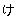

親譲りの無鉄砲で小供の時から損ばかりして居る。小学校に居る時分学校の二階から飛び降りて一週間程腰を抜かした事がある。なぜそんな無闇をしたと聞く人があるかも知れぬ。別段深い理由でもない。新築の二階から首を出して居たら、同級生の一人が冗談に、いくら威張つても、そこから飛び降りる事は出来まい。弱虫やーい。と囃したからである。小使に負ぶさつて帰つて来た時、おやぢが大きな眼をして二階位から飛び降りて腰を抜かす奴があるかと云つたから、此次は抜かさずに飛んで見せますと答へた。
親類のものから西洋製のナイフを貰つて奇麗な刃を日に翳して、友達に見せて居たら、一人が光る事は光るが切れさうもないと云つた。切れぬ事があるか、何でも切つて見せると受け合つた。そんなら君の指を切つて見ろと注文したから、何だ指位此通りだと右の手の親指の甲をはすに切り込んだ。幸ナイフが小さいのと、親指の骨が堅かつたので、今だに親指は手に付いて居る。然し創痕は死ぬ迄消えぬ。
庭を東へ二十歩に行き尽すと、南上がりに聊か許りの菜園があつて、真中に栗の木が一本立つて居る。是は命より大事な栗だ。実の熟する時分は起き抜けに脊戸を出て落ちた奴を拾つてきて、学校で食ふ。菜園の西側が山城屋と云ふ質屋の庭続きで、此質屋に勘太郎といふ十三四の忰が居た。勘太郎は無論弱虫である。弱虫の癖に四っ目垣を乗りこえて、栗を盗みにくる。ある日の夕方折戸の蔭に隠れて、とう／＼勘太郎を捕まへてやつた。其時勘太郎は逃げ路を失つて、一生懸命に飛びかゝつて来た。向ふは二っ許り年上である。弱虫だが力は強い。鉢の開いた頭を、こつちの胸へ宛てゝぐい／＼押した拍子に、勘太郎の頭がすべつて、おれの袷の袖の中に這入つた。邪魔になつて手が使へぬから無暗に手を振つたら、袖の中にある勘太郎の頭が、右左へぐら／＼靡いた。仕舞に苦しがつて袖の中から、おれの二の腕へ食い付いた。痛かつたから勘太郎を垣根へ押しつけて置いて、
此外いたづらは大分やつた。大工の兼公と肴屋の角をつれて、茂作の人参畠をあらした事がある。人参の芽が出揃はぬ処へ藁が一面に敷いてあつたから、其上で三人が半日相撲をとりつゞけに取つたら、人参がみんな踏みつぶされて仕舞つた。古川の持つて居る田圃の井戸を埋めて尻を持ち込まれた事もある。太い孟宗の節を抜いて、深く埋めた中から水が湧き出て、そこいらの稲に水がかゝる仕掛であつた。其時分はどんな仕掛か知らぬから、石や棒ちぎれをぎう／＼井戸の中へ挿し込んで、水が出なくなつたのを見届けて、うちへ帰つて飯を食つて居たら、古川が真赤になつて怒鳴り込んで来た。慥か罰金を出して済んだ様である。
おやぢは些ともおれを可愛がつて呉れなかつた。母は兄許り贔負にして居た。此兄はやに色が白くつて、芝居の真似をして女形になるのが好きだつた。おれを見る度にこいつはどうせ碌なものにはならないと、おやぢが云つた。乱暴で乱暴で行く先が案じられると母が云つた。成程碌なものにはならない。御覧の通りの始末である。行く先が案じられたのも無理はない。只懲役に行かないで生きて居る許りである。
母が病気で死ぬ二三日前台所で宙返りをしてへつついの角で肋骨を撲つて大に痛かつた。母が大層怒つて、御前の様なものゝ顔は見たくないと云ふから、親類へ泊りに行つて居た。するととう／＼死んだと云ふ報知が来た。さう早く死ぬとは思はなかつた。そんな大病なら、もう少し大人しくすればよかつたと思つて帰つて来た。さうしたら例の兄がおれを親不孝だ、おれの為めに、おつかさんが早く死んだんだと云つた。口惜しかつたから、兄の横っ面を張つて大変叱られた。
母が死んでからは、おやぢと兄と三人で暮して居た。おやぢは何にもせぬ男で、人の顔さへ見れば貴様は駄目だ／＼と口癖の様に云つて居た。何が駄目なんだか今に分らない。妙なおやぢが有つたもんだ。兄は実業家になるとか云つて頻りに英語を勉強して居た。元来女の様な性分で、ずるいから、仲がよくなかつた。十日に一遍位の割で喧嘩をして居た。ある時将棋をさしたら卑怯な待駒をして、人が困ると嬉しさうに冷やかした。あんまり腹が立つたから、手に在つた飛車を眉間へ擲きつけてやつた。眉間が割れて少々血が出た。兄がおやぢに言付けた。おやぢがおれを勘当すると言ひ出した。
其時はもう仕方がないと観念して先方の云ふ通り勘当される積りで居たら、十年来召し使つて居る清と云ふ下女が、泣きながらおやぢに詫まつて、漸くおやぢの怒りが解けた。それにも関らずあまりおやぢを怖いとは思はなかつた。却つて此清と云ふ下女に気の毒であつた。此下女はもと由緒のあるものだつたさうだが、瓦解のときに零落して、つい奉公迄する様になつたのだと聞いて居る。だから婆さんである。此婆さんがどう云ふ因縁か、おれを非常に可愛がつて呉れた。不思議なものである。母も死ぬ三日前に愛想をつかした――おやぢも年中持て余してゐる――町内では乱暴者の悪太郎と爪弾きをする――此おれを無暗に珍重してくれた。おれは到底人に好かれる性でないとあきらめて居たから、他人から木の端の様に取り扱はれるのは何とも思はない、却つて此清の様にちやほやしてくれるのを不審に考へた。清は時々台所で人の居ない時に「あなたは真っ直でよい御気性だ」と賞める事が時々あつた。然しおれには清の云ふ意味が分からなかつた。好い気性なら清以外のものも、もう少し善くしてくれるだらうと思つた。清がこんな事を云ふ度におれは御世辞は嫌だと答へるのが常であつた。すると婆さんは夫だから好い御気性ですと云つては、嬉しさうにおれの顔を眺めて居る。自分の力でおれを製造して誇つてる様に見える。少々気味がわるかつた。
母が死んでから清は愈おれを可愛がつた。時々は小供心になぜあんなに可愛がるのかと不審に思つた。つまらない、癈せばいゝのにと思つた。気の毒だと思つた。夫でも清は可愛がる。折々は自分の小遣で金鍔や紅梅焼を買つてくれる。寒い夜などはひそかに蕎麦粉を仕入れて置いて、いつの間にか寐て居る枕元へ蕎麦湯を持つて来てくれる。時には鍋焼饂飩さへ買つてくれた。只食ひ物許りではない。靴足袋ももらつた、鉛筆も貰つた。帳面も貰つた。是はずつと後の事であるが金を三円許り借してくれた事さへある。何も借せと云つた訳ではない。向で部屋へ持つて来て御小遣がなくて御困りでせう、御使ひなさいと云つて呉れたんだ。おれは無論入らないと云つたが、是非使へと云ふから、借りて置いた。実は大変嬉しかつた。其三円を蝦蟇口へ入れて、懐へ入れたなり便所へ行つたら、すぽりと後架の中へ落して仕舞つた。仕方がないから、のそ／＼出て来て実は是々だと清に話した所が、清は早速竹の棒を捜して来て、取つて上げますと云つた。しばらくすると井戸端でざあ／＼音がするから、出て見たら竹の先へ蝦蟇口の紐を引き懸けたのを水で洗つて居た。夫から口をあけて壱円札を改めたら茶色になつて模様が消えかゝつて居た。清は火鉢で乾かして、是でいゝでせうと出した。一寸かいで見て臭いやと云つたら、それぢや御出しなさい、取り換えて来て上げますからと、どこでどう胡魔化したか札の代りに銀貨を三円持つて来た。此三円は何に使つたか忘れて仕舞つた。今に帰すよと云つたぎり、帰さない。今となつては十倍にして帰してやりたくても帰せない。
清が物を呉れる時には必ずおやぢも兄も居ない時に限る。おれは何が嫌だと云つて人に隠れて自分丈得をする程嫌な事はない。兄とは無論仲がよくないけれども、兄に隠して清から菓子や色鉛筆を貰ひたくはない。なぜ、おれ一人に呉れて、兄さんには遣らないのかと清に聞く事がある。すると清は澄したもので御兄様は御父様が買つて御上げなさるから構ひませんと云ふ。是は不公平である。おやぢは頑固だけれども、そんな依怙贔負はせぬ男だ。然し清の眼から見るとさう見えるのだらう。全く愛に溺れて居たに違ない。元は身分のあるものでも教育のない婆さんだから仕方がない。単に是許ではない。贔負目は恐ろしいものだ。清はおれを以て将来立身出世して立派なものになると思ひ込んで居た。其癖勉強をする兄は色許り白くつて、迚も役には立たないと一人できめて仕舞つた。こんな婆さんに逢つては叶はない。自分の好きなものは必ずえらい人物になつて、嫌なひとは屹度落ち振れるものと信じて居る。おれは其時から別段何になると云ふ了見もなかつた。然し清がなる／＼と云ふものだから、矢っ張り何かに成れるんだらうと思つて居た。今から考へると馬鹿々々しい。ある時抔は清にどんなものになるだらうと聞いて見た事がある。所が清にも別段の考もなかつた様だ。只手車へ乗つて、立派な玄関のある家をこしらへるに相違ないと云つた。
夫から清はおれがうちでも持つて独立したら、一所になる気で居た。どうか置いて下さいと何遍も繰り返して頼んだ。おれも何だかうちが持てる様な気がして、うん置いてやると返事丈はして置いた。所が此女は中々想像の強い女で、あなたはどこが御好き、麹丁ですか麻布ですか、御庭へぶらんこを御こしらへ遊ばせ、西洋間は一つで沢山です抔と勝手な計画を独りで並べて居た。其時は家なんか欲しくも何ともなかつた、西洋館も日本建も全く不用であつたから、そんなものは欲しくないと、いつでも清に答へた。すると、あなたは慾がすくなくつて、心が奇麗だと云つて又賞めた。清は何と云つても賞めてくれる。
母が死んでから五六年の間は此状態で暮して居た。おやぢには叱られる。兄とは喧嘩をする。清には菓子を貰ふ、時々賞められる。別に望もない、是で沢山だと思つて居た。ほかの小供も一概にこんなものだらうと思つて居た。只清が何かにつけて、あなたは御可哀想だ、不仕合だと無暗に云ふものだから、それぢや可哀想で不仕合せなんだらうと思つた。其外に苦になる事は少しもなかつた。只おやぢが小使を呉れないには閉口した。
母が死んでから六年目の正月におやぢも卒中で亡くなつた。其年の四月におれはある私立の中学校を卒業する。六月に兄は商業学校を卒業した。兄は何とか会社の九州の支店に口があつて行かなければならん。おれは東京でまだ学問をしなければならない。兄は家を売つて財産を片付けて任地へ出立すると云ひ出した。おれはどうでもするが宜からうと返事をした。どうせ兄の厄介になる気はない。世話をしてくれるにした所で、喧嘩をするから向でも何とか云ひ出すに極つて居る。なまじい保護を受ければこそ、こんな兄に頭を下げなければならない。牛乳配達をしても食つてられると覚悟をした。兄は夫から道具屋を呼んで来て、先祖代々の瓦落多を二束三文に売つた。家屋敷はある人の周旋でさる金満家に譲つた。此方は大分金になつた様だが、詳しい事は一向知らぬ。おれは一ヶ月以前から、しばらく前途の方向のつく迄神田の小川町へ下宿をして居た。清は十何年居たうちが人手に渡るのを大に残念がつたが、自分のものでないから、仕様がなかつた。あなたがもう少し年をとつて入らつしやれば、こゝが御相続が出来ますものをとしきりに口説いて居た。もう少し年を取つて相続が出来るものなら、今でも相続が出来る筈だ。婆さんは何も知らないから年さへ取れば兄の家がもらへると信じて居る。
兄とおれは斯様に分れたが、困つたのは清の行く先である。兄は無論連れて行ける身分でなし、清も兄の尻にくつ付いて九州下り迄出掛ける気は毛頭なし、と云つて此時のおれは四畳半の安下宿に籠つて、夫すらもいざとなれば直ちに引き払はねばならぬ始末だ。どうする事も出来ん。清に聞いて見た。どこかへ奉公でもする気かねと云つたらあなたが御うちを持つて、奥さまを御貰ひになる迄は、仕方がないから甥の厄介になりませうと漸く決心した返事をした。此甥は裁判所の書記で先づ今日には差支なく暮して居たから、今迄も清に来るなら来いと二三度勧めたのだが、清は仮令下女奉公はしても年来住み馴れた家の方がいゝと云つて応じなかつた。然し今の場合知らぬ屋敷へ奉公易をして入らぬ気兼を仕直すより、甥の厄介になる方がましだと思つたのだらう。夫にしても早くうちを持ての、妻を貰への、来て世話をするのと云ふ。親身の甥よりも他人のおれの方が好きなのだらう。
九州へ立つ二日前兄が下宿へ来て金を六百円出して是を資本にして商買をするなり、学資にして勉強をするなり、どうでも随意に使ふがいゝ、其代りあとは構はないと云つた。兄にしては感心なやり方だ。何の六百円位貰はんでも困りはせんと思つたが、例に似ぬ淡泊な処置が気に入つたから、礼を云つて貰つて置いた。兄は夫から五十円出して之を序に清に渡してくれと云つたから、異議なく引き受けた。二日立つて新橋の停車場で分れたぎり兄には其後一遍も逢はない。
おれは六百円の使用法に就て寐ながら考へた。商買をしたつて面倒くさくつて旨く出来るものぢやなし、ことに六百円位の金で商買らしい商買がやれる訳でもなからう。よしやれるとしても、今の様ぢや人の前へ出て教育を受けたと威張れないから詰り損になる許りだ。資本抔はどうでもいゝから、これを学資にして勉強してやらう。六百円を三に割つて一年に二百円宛使へば三年間は勉強が出来る。三年間一生懸命にやれば何か出来る。夫からどこの学校へ這入らうと考へたが、学問は生来どれもこれも好きでない。ことに語学とか文学とか云ふものは真平御免だ。新体詩などゝ来ては二十行あるうちで一行も分らない。どうせ嫌なものなら何をやつても同じ事だと思つたが、幸ひ物理学校の前を通り掛つたら生徒募集の広告が出て居たから、何も縁だと思つて規則書をもらつてすぐ入学の手続をして仕舞つた。今考へると是も親譲りの無鉄砲から起つた失策だ。
三年間まあ人並に勉強はしたが別段たちのいゝ方でもないから、席順はいつでも下から勘定する方が便利であつた。然し不思議なもので、三年立つたらとう／＼卒業して仕舞つた。自分でも可笑しいと思つたが苦情を云ふ訳もないから大人しく卒業して置いた。
卒業してから八日目に校長が呼びに来たから、何の用だらうと思つて、出掛けて行つたら、四国辺のある中学校で数学の教師が入る。月給は四十円だが、行つてはどうだと云ふ相談である。おれは三年間学問はしたが実を云ふと教師になる気も、田舎へ行く考へも何もなかつた。尤も教師以外に何をしやうと云ふあてもなかつたから、此相談を受けた時、行きませうと即席に返事をした。是も親譲りの無鉄砲が祟つたのである。
引き受けた以上は赴任せねばならぬ。此三年間は四畳半に蟄居して小言は只の一度も聞いた事がない。喧嘩もせずに済んだ。おれの生涯のうちでは比較的呑気な時節であつた。然しかうなると此四畳半も引き払はなければならん。生れてから東京以外に踏み出したのは、同級生と一所に鎌倉へ遠足した時許りである。今度は鎌倉所ではない。大変な遠くへ行かねばならぬ。地図で見ると海浜で針の先程小さく見える。どうせ碌な所ではあるまい。どんな町で、どんな人が住んでるか分らん。分らんでも困らない。心配にはならぬ。只行く許である。尤も少々面倒臭い。
家を畳んでからも清の所へは折々行つた。清の甥と云ふのは存外結構な人である。おれが行くたびに、居りさへすれば、何くれと款待なして呉れた。清はおれを前へ置いて、色々おれの自慢を甥に聞かせた。今に学校を卒業すると麹町辺へ屋敷を買つて役所へ通ふのだ抔と吹聴した事もある。独りで極めて一人で喋舌るから、こつちは困つて顔を赤くした。夫も一度や二度ではない。折々おれが小さい時寐小便をした事迄持ち出すには閉口した。甥は何と思つて清の自慢を聞いて居たか分らぬ。只清は昔風の女だから、自分とおれの関係を封建時代の主従の様に考へて居た。自分の主人なら甥の為にも主人に相違ないと合点したものらしい。甥こそいゝ面の皮だ。
愈約束が極まつて、もう立つと云ふ三日前に清を尋ねたら、北向の三畳に風邪を引いて寐て居た。おれの来たのを見て、起き直るが早いか、坊っちやん
出立の日には朝から来て、色々世話をやいた。来る途中小間物屋で買つて来た歯磨と楊子と手拭をズツクの革鞄に入れて呉れた。そんな者は入らないと云つても中々承知しない。車を並べて停車場へ着いて、プラツトフォームの上へ出た時、車へ乗り込んだおれの顔を昵と見て「もう御別れになるかも知れません。存分御機嫌やう」と小さな声で云つた。目に涙が一杯たまつて居る。おれは泣かなかつた。然しもう少しで泣く所であつた。汽車が余っ程動き出してから、もう大丈夫だらうと思つて、窓から首を出して、振り向いたら、矢っ張り立つて居た。何だか大変小さく見えた。
ぶうと云つて汽船がとまると、
停車場はすぐ知れた。切符も訳なく買つた。乗り込んで見るとマツチ箱の様な汽車だ。ごろ／＼と五分許り動いたと思つたら、もう降りなければならない。道理で切符が安いと思つた。たつた三銭である。夫から車を傭つて、中学校へ来たら、もう放課後で誰も居ない。宿直は一寸用達に出たと小使が教へた。随分気楽な宿直がゐるものだ。校長でも尋ね様かと思つたが、草臥れたから、車に乗つて宿屋へ連れて行けと車夫に云ひ付けた。車夫は威勢よく山城屋と云ふうちへ横付にした。山城屋とは質屋の勘太郎の屋号と同じだから一寸面白く思つた。
何だか二階の楷子段の下の暗い部屋へ案内した。熱くつて居られやしない。こんな部屋はいやだと云つたら生憎みんな塞がつて居りますからと云ひながら革鞄を抛り出した儘出て行つた。仕方がないから部屋の中へ這入つて汗をかいて我慢して居た。やがて湯に入れと云ふから、ざぶりと飛び込んで、すぐ上がつた。帰りがけに覗いて見ると涼しさうな部屋が沢山空いてゐる。失敬な奴だ。嘘をつきあがつた。それから下女が膳を持つて来た。部屋は熱つかつたが、
道中をしたら茶代をやるものだと聞いて居た。茶代をやらないと粗末に取り扱はれると聞いて居た。こんな、狭くて暗い部屋へ押し込めるのも茶代をやらない
学校は昨日車で乗りつけたから、大概の見当は分つて居る。四っ角を二三度曲がつたらすぐ門の前へ出た。門から玄関迄は御影石で敷きつめてある。きのふ此敷石の上を車でがら／＼と通つた時は、無暗に仰山な音がするので少し弱つた。途中から小倉の制服を着た生徒に沢山逢つたが、みんな此門を這入つて行く。中にはおれより脊が高くつて強さうなのが居る。あんな奴を教へるのかと思つたら何だか気味が悪るくなつた。名刺を出したら校長室へ通した。校長は薄髯のある、色の黒い、眼の大きな狸の様な男である。やに勿体ぶつて居た。まあ精出して勉強してくれと云つて、恭しく大きな印の捺つた辞令を渡した。此辞令は東京へ帰るとき丸めて海の中へ抛り込んで仕舞つた。校長は今に職員に紹介してやるから、一々其人に此辞令を見せるんだと言つて聞かした。余計な手数だ。そんな面倒な事をするより此辞令を三日間教員室へ張り付ける方がましだ。
教員が控所へ揃ふには一時間目の喇叭が鳴らなくてはならぬ。大分時間がある。校長は時計を出して見て、追々ゆるりと話す積だが、先づ大体の事を呑み込んで置いて貰はうと云つて、夫から教育の精神について長い御談義を聞かした。おれは無論いゝ加減に聞いて居たが、途中から是は飛んだ所へ来たと思つた。校長の云ふ様にはとても出来ない。おれ見た様な無鉄砲なものをつらまへて、生徒の模範になれの、一校の師表と仰がれなくては行かんの、学問以外に個人の徳化を及ぼさなくては教育者になれないの、と無暗に法外な注文をする。そんなえらい人が月給四十円で遥々こんな田舎へくるもんか。人間は大概似たもんだ。腹が立てば喧嘩の一つ位は誰でもするだらうと思つてたが、此様子ぢや滅多に口も聞けない、散歩も出来ない。そんな六※［＃濁点付き小書き平仮名つ、265-6］かしい役なら雇ふ前からこれ／＼だと話すがいゝ。おれは嘘をつくのが嫌だから、仕方がない、だまされて来たのだとあきらめて、思ひ切りよく、こゝで断はつて帰つちまはうと思つた。宿屋へ五円やつたから、財布の中には九円なにがししかない。九円ぢや東京迄は帰れない。茶代なんかやらなければよかつた。惜しい事をした。然し九円だつて、どうかならない事はない。旅費は足りなくつても嘘をつくよりましだと思つて、到底あなたの仰やる通りにや、出来ません、此辞令は返しますと云つたら、校長は狸の様な眼をぱちつかせておれの顔を見て居た。やがて、今のは只希望である、あなたが希望通り出来ないのはよく知つて居るから心配しなくつてもいゝと云ひながら笑つた。その位よく知つてるなら、始めから
さう、かうする内に喇叭が鳴つた。教場の方が急にがやがやする。もう教員も控所へ揃ひましたらうと云ふから、校長に尾いて教員控所へ這入つた。広い細長い部屋の周囲に机を並べてみんな腰をかけて居る。おれが這入つたのを見て、みんな申し合せた様におれの顔を見た。見世物ぢやあるまいし。夫から申し付けられた通り一人一人の前へ行つて辞令を出して挨拶をした。大概は椅子を離れて腰をかゞめた許りであつたが、念の入つたのは差し出した辞令を受け取つて一応拝見をして夫を恭しく返却した。丸で宮芝居の真似だ。十五人目に体操の教師へ廻つて来た時には、同じ事を何返もやるので少々ぢれつたくなつた。向は一度で済む、こつちは同じ所作を十五返繰り返して居る。少しはひとの了見も察して見るがいゝ。
挨拶をしたうちに教頭のなにがしと云ふのが居た。是は文学士ださうだ。文学士と云へば大学の卒業生だからえらい人なんだらう。妙に女の様な優しい声を出す人だつた。尤も驚ろいたのは此暑いのにフランネルの
挨拶が一通り済んだら、校長が今日はもう引き取つてもいゝ、尤も授業上の事は数学の主任と打ち合せをして置いて、明後日から課業を始めてくれと云つた。数学の主任は誰かと聞いて見たら例の山嵐であつた。忌々しい、こいつの下に働くのかおや／＼と失望した。山嵐は「おい君どこに宿つてるか、山城屋か、うん、今に行つて相談する」と云ひ残して白墨を持つて教場へ出て行つた。主任の癖に向から来て相談するなんて不見識な男だ。然し呼び付けるよりは感心だ。
夫から学校の門を出て、すぐ宿へ帰らうと思つたが、帰つたつて仕方がないから、少し町を散歩してやらうと思つて、無暗に足の向く方をあるき散らした。県庁も見た。古い前世紀の建築である。兵営も見た。麻布の聯隊より立派でない。大通りも見た。神楽坂を半分に狭くした位な道幅で町並はあれより落ちる。廿五万石の城下だつて高の知れたものだ。こんな所に住んで御城下だ抔と威張つてる人間は可哀想なものだと考へながらくると、いつしか山城屋の前へ出た。広い様でも狭いものだ。是で大抵は見尽したのだらう。帰つて飯でも食はうと門口を這入つた。帳場に坐つて居たかみさんが、おれの顔を見ると急に飛び出して来て御帰り……と板の間へ頭をつけた。靴を脱いで上がると、御座敷があきましたからと下女が二階へ案内をした。十五畳の表二階で大きな床の間がついて居る。おれは生れてからまだこんな立派な坐敷へ這入つた事はない。此後いつ這入れるか分らないから、洋服を脱いで浴衣一枚になつて坐敷の真中へ大の字に寐て見た。いゝ心持ちである。
昼飯を食つてから早速清へ手紙をかいてやつた。おれは文章がまづい上に字を知らないから手紙をかくのが大嫌だ。又やる所もない。然し清は心配して居るだらう。難船して死にやしないか抔と思つちや困るから、奮発して長いのを書いてやつた。其文句はかうである。
「きのふ着いた。つまらん所だ。十五畳の坐敷に寐て居る。宿屋へ茶代を五円やつた。かみさんが頭を板の間へすりつけた。夕べは寐られなかつた。清が笹飴を笹ごと食ふ夢を見た。来年の夏は帰る。今日学校へ行つてみんなにあだなをつけてやつた。校長は狸、教頭は赤しやつ、英語の教師はうらなり、数学は山嵐、画学はのだいこ。今に色々な事をかいてやる。左様なら」
手紙をかいて仕舞つたら、いゝ心持ちになつて眠気がさしたから、最前の様に坐敷の真中へのび／＼と大の字に寐た。今度は夢も何も見ないでぐつすり寐た。この部屋かいと大きな声がするので眼が覚めたら、山嵐が這入つて来た。最前は失敬、君の受持ちは……と人が起き上がるや否や談判を開かれたので大に狼狽した。受持ちを聞いて見ると別段六※［＃濁点付き小書き平仮名つ、269-12］かしい事もなさゝうだから承知した。此位な事なら、明後日は愚、明日から始めろと云つたつて驚ろかない。授業上の打ち合せが済んだら、君はいつ迄こんな宿屋に居る積りでもあるまい、僕がいゝ下宿を周旋してやるから移り玉へ。外のものでは承知しないが僕が話せばすぐ出来る。早い方がいゝから、
愈学校へ出た。初めて教場へ這入つて高い所へ乗つた時は、何だか変だつた。講釈をしながら、おれでも先生が勤まるのかと思つた。生徒は八釜しい。時々図抜けた大きな声で先生と云ふ。先生には答へた。今迄物理学校で毎日先生々々と呼びつけて居たが、先生と呼ぶのと、呼ばれるのは雲泥の差だ。何だか足の裏がむづ／＼する。おれは卑怯な人間ではない、臆病な男でもないが、惜しい事に胆力が欠けて居る。先生と大きな声をされると、腹の減つた時に丸の内で
二時間目に白墨を持つて控所を出た時には何だか敵地へ乗り込む様な気がした。教場へ出ると今度の組は前より大きな奴ばかりである。おれは江戸っ子で華奢に小作りに出来て居るから、どうも高い所へ上がつても押しが利かない。喧嘩なら相撲取とでもやつて見せるが、こんな大僧を四十人も前へ並べて、只一枚の舌をたゝいて恐縮させる手際はない。然しこんな田舎者に弱身を見せると癖になると思つたから、成るべく大きな声をして、少々巻き舌で講釈してやつた。最初のうちは、生徒も烟に捲かれてぼんやりして居たから、それ見ろと益得意になつて、べらんめい調を用ゐてたら、一番前の列の真中に居た、一番強さうな奴が、いきなり起立して先生と云ふ。そら来たと思ひながら、何だと聞いたら、「あまり早くて分からんけれ、まちつと、ゆる／＼遣つて、おくれんかな、もし」と云つた。おくれんかな、もしは生温るい言葉だ。早過ぎるなら、ゆつくり云つてやるが、おれは江戸っ子だから君等の言葉は使へない、分らなければ、分る迄待つてるがいゝと答へてやつた。此調子で二時間目は思つたより、うまく行つた。只帰りがけに生徒の一人が一寸此問題を解釈しておくれんかな、もし、と出来さうもない幾何の問題を持つて逼つたには冷汗を流した。仕方がないから何だか分らない此次教へてやると急いで引き揚げたら、生徒がわあと囃した。其中に出来ん／＼と云ふ声が聞える。箆棒め、先生だつて、出来ないのは当り前だ。出来ないのを出来ないと云ふのに不思議があるもんか。そんなものが出来る位なら四十円でこんな田舎へくるもんかと控所へ帰つて来た。今度はどうだと又山嵐が聞いた。うんと云つたが、うん丈では気が済まなかつたから、此学校の生徒は分らずやだなと云つてやつた。山嵐は妙な顔をして居た。
三時間目も、四時間目も昼過ぎの一時間も大同少異であつた。最初の日に出た級は、いづれも少々づゝ失敗した。教師ははたで見る程ぢやないと思つた。授業は一※［＃小書き平仮名と、272-10］通り済んだが、まだ帰れない、三時迄ぽつ然として待つてなくてはならん。三時になると、受持級の生徒が自分の教室を掃除して報知にくるから検分をするんださうだ。夫から、出席簿を一応しらべて漸く御暇が出る。いくら月給で買はれた
夫からうちへ帰つてくると、宿の亭主が御茶を入れませうと云つてやつて来る。御茶を入れると云ふから御馳走をするのかと思ふと、おれの茶を遠慮なく入れて自分が飲むのだ。此様子では留守中も勝手に御茶を入れませうを一人で履行して居るかも知れない。亭主が云ふには手前は書画骨董がすきで、とう／＼こんな商買を内々で始める様になりました。あなたも御見受申す所大分御風流で居らつしやるらしい。ちと道楽に御始めなすつては如何ですと、飛んでもない勧誘をやる。二年前ある人の使に帝国ホテルへ行つた時は錠前直しと間違へられた事がある。ケツトを被つて、鎌倉の大仏を見物した時は車屋から親方と云はれた。其外今日迄見損はれた事は随分あるが、まだおれをつらまへて大分御風流で居らつしやると云つたものはない。大抵はなりや様子でも分る。風流人なんて云ふものは、画を見ても、頭巾を被るか短冊を持つてるものだ。このおれを風流人だ抔と真面目に云ふのは只の曲者ぢやない。おれはそんな呑気な隠居のやる様な事は嫌だと云つたら、亭主はへヽヽヽと笑ひながら、いえ始めから好きなものは、どなたも御座いませんが、一反此道に這入ると中々出られませんと一人で茶を注いで妙な手付をして飲んで居る。実はゆふべ茶を買つてくれと頼んで置いたのだが、こんな苦い濃い茶はいやだ。一杯飲むと胃に答へる様な気がする。今度からもつと苦くないのを買つてくれと云つたら、かしこまりましたと又一杯しぼつて飲んだ。人の茶だと思つて無暗に飲む奴だ。主人が引き下がつてから、あしたの下読をしてすぐ寐て仕舞つた。
それから毎日々々学校へ出ては規則通り働く、毎日々々帰つて来ると主人が御茶を入れませうと出てくる。一週間許りしたら学校の様子も一※［＃小書き平仮名と、274-6］通りは飲み込めたし、宿の夫婦の人物も大概は分つた。ほかの教師に聞いて見ると辞令を受けて一週間から一ヶ月位の間は自分の評番がいゝだらうか、悪るいだらうか非常に気に掛かるさうであるが、おれは一向そんな感じはなかつた。教場で折々しくぢると其時丈はやな心持だが三十分許り立つと奇麗に消えて仕舞ふ。おれは何事によらず長く心配しやうと思つても心配が出来ない男だ。教場のしくぢりが生徒にどんな影響を与へて、其影響が校長や教頭にどんな反応を呈するか丸で無頓着であつた。おれは前に云ふ通りあんまり度胸の据つた男ではないのだが、思ひ切りは頗るいゝ人間である。此学校がいけなければすぐどつかへ行く覚悟で居たから、狸も赤シヤツも、些とも恐しくはなかつた。まして教場の小僧共なんかには愛嬌も御世辞も使ふ気になれなかつた。学校はそれでいゝのだが下宿の方はさうはいかなかつた。亭主が茶を飲みに来る丈なら我慢もするが、色々なものを持つてくる。始めに持つて来たのは何でも印材で、十ばかり並べて置いて、みんなで三円なら安い物だ御買なさいと云ふ。田舎巡りのヘボ絵師ぢやあるまいし、そんなものは入らないと云つたら、今度は華山とか何とか云ふ男の花鳥の掛物をもつて来た。自分で床の間へかけて、いゝ出来ぢやありませんかと云ふから、さうかなと好加減に挨拶をすると、華山には二人ある、一人は何とか華山で、一人は何とか華山ですが、此幅はその何とか華山の方だと、くだらない講釈をしたあとで、どうです、あなたなら十五円にして置きます。御買なさいと催促をする。金がないと断はると、金なんか、いつでも宜う御座いますと中々頑固だ。金があつても買はないんだと、其時は追っ払つちまつた。其次には鬼瓦位な大硯を担ぎ込んだ。是は端渓です、端渓ですと二遍も三遍も端渓がるから、面白半分に端渓た何だいと聞いたらすぐ講釈を始め出した。端渓には上層中層下層とあつて、今時のものはみんな上層ですが、是は慥かに中層です、此
其うち学校もいやになつた。ある日の晩大町と云ふ所を散歩して居たら郵便局の隣りに蕎麦とかいて、下に東京と注を加へた看板があつた。おれは蕎麦が大好きである。東京に居つた時でも蕎麦屋の前を通つて薬味の香ひをかぐと、どうしても暖簾がくゞりたくなつた。今日迄は数学と骨董で蕎麦を忘れて居たが、かうして看板を見ると素通りが出来なくなる。序でだから一杯食つて行かうと思つて上がり込んだ。見ると看板程でもない。東京と断はる以上はもう少し奇麗にしさうなものだが、東京を知らないのか、金がないのか、滅法きたない。畳は色が変つて御負けに砂でざら／＼して居る。壁は煤で真黒だ。天井はランプの油烟で燻ぼつてるのみか、低くつて、思はず首を縮める位だ。只例々と蕎麦の名前をかいて張り付けたねだん付け丈は全く新しい。何でも古いうちを買つて二三日前から開業したに違なからう。ねだん付の第一号に天麩羅とある。おい天麩羅を持つてこいと大きな声を出した。すると此時迄隅の方に三人かたまつて、何かつる／＼、ちゆ／＼食つてた連中が、ひとしくおれの方を見た。部屋が暗いので、一寸気がつかなかつたが顔を合せると、みんな学校の生徒である。先方で挨拶をしたから、おれも挨拶をした。其晩は久し振に蕎麦を食つたので、旨かつたから天麩羅を四杯平げた。
翌日何の気もなく教場へ這入ると、黒板一杯位な大きな字で、天麩羅先生とかいてある。おれの顔を見てみんなわあと笑つた。おれは馬鹿々々しいから、天麩羅を食つちや可笑しいかと聞いた。すると生徒の一人が、然し四杯は過ぎるぞな、もし、と云つた。四杯食はうが五杯食はうがおれの銭でおれが食ふのに文句があるもんかと、さつさと講義を済まして控所へ帰つて来た。十分立つて次の教場へ出ると一つ天麩羅四杯也。但し笑ふ可らず。と黒板にかいてある。さつきは別に腹も立たなかつたが今度は癪に障つた。冗談も度を過ごせばいたづらだ。焼持の黒焦の様なもので誰も賞め手はない。田舎者は此呼吸が分からないから、どこ迄押して行つても構はないと云ふ了見だらう。一時間あるくと見物する町もない様な狭い都に住んで、外に何にも芸がないから、天麩羅事件を日露戦争の様に触れちらかすんだらう。憐れな奴等だ。小供の時から、こんなに教育されるから、いやにひねつこびた、植木鉢の楓見た様な小人が出来るんだ。無邪気なら一所に笑つてもいゝが、こりやなんだ。小供の癖に乙に毒気を持つてる。おれはだまつて、天麩羅を消して、こんないたづらが面白いか、卑怯な冗談だ。君等は卑怯と云ふ意味を知つてるか、と云つたら、自分がした事を笑はれて
天麩羅蕎麦もうちへ帰つて、一晩寐たらそんなに肝癪に障らなくなつた。学校へ出て見ると、生徒も出てゐる。何だか訳が分らない。夫から三日許りは無事であつたが、四日目の晩に住田と云ふ所へ行つて団子を食つた。此住田と云ふ所は温泉のある町で城下から汽車だと十分許り、歩行いて三十分で行かれる。料理屋も温泉宿も、公園もある上に遊廓がある。おれの這入つた団子屋は遊廓の入口にあつて、大変うまいと云ふ評判だから、温泉に行つた帰りがけに一寸食つて見た。今度は生徒にも逢はなかつたから、誰も知るまいと思つて、翌日学校へ行つて、一時間目の教場へ這入ると団子二皿七銭とかいてある。実際おれは団子を二皿食つて七銭払つた。どうも厄介な奴等だ。二時間目にも屹度何かあると思ふと遊廓の団子旨い／＼と書いてある。あきれ返つた奴等だ。団子が夫で済んだと思つたら今度は赤手拭と云ふのが評判になつた。何の事だと思つたら、詰らない来歴だ。おれはこゝへ来てから、毎日住田の温泉へ行く事に極めて居る。ほかの所は何を見ても東京の足元にも及ばないが温泉丈は立派なものだ。折角来たもんだから毎日這入つてやらうと云ふ気で、晩飯前に運動旁出掛る。所が行くときには必ず西洋手拭の大きな奴をぶら下げて行く。此手拭が湯に染つた上へ、赤い縞が流れ出したので、一寸見ると紅色に見える。おれは此手拭を行きも帰りも、汽車に乗つてもあるいても、常にぶら下げて居る。それで生徒がおれの事を赤手拭赤手拭と云ふんださうだ。どうも狭い土地に住んでるとうるさい者だ。まだある。温泉は三階の新築で上等は浴衣をかして、流しをつけて八銭で済む。其上に女が天目へ茶を載せて出す。おれはいつでも上等へ這入つた。すると四十円の月給で毎日上等へ這入るのは贅沢だと云ひ出した。余計な御世話だ。まだある。湯壺は花崗石を畳み上げて、十五畳敷位の広さに仕切つてある。大抵は十三四人漬つてるがたまには誰も居ない事がある。深さは立つて乳の辺まであるから、運動の為めに、湯の中を泳ぐのは中々愉快だ。おれは人の居ないのを見済しては十五畳の湯壺を泳ぎ巡つて喜こんで居た。所がある日三階から威勢よく下りて今日も泳げるかなとざくろ口を覗いて見ると、大きな札へ黒々と湯の中で泳ぐべからずとかいて貼りつけてある。湯の中で泳ぐものは、あまり有るまいから、此貼札はおれの為めに特別に新調したのかも知れない。おれはそれから泳ぐのは断念した。泳ぐのは断念したが、学校へ出て見ると、例の通り黒板に湯の中で泳ぐべからずと書いてあるには驚ろいた。何だか生徒全体がおれ一人を探偵して居る様に思はれた。くさ／＼した。生徒が何を云つたつて、やらうと思つた事をやめる様なおれではないが、何でこんな狭苦しい鼻の先がつかへる様な所へ来たのかと思ふと情なくなつた。それでうちへ帰ると相変らず骨董責である。
学校には宿直があつて、職員が代る／＼之をつとめる。但し狸と赤シヤツは例外である。何で此両人が当然の義務を免かれるのかと聞いて見たら、奏任待遇だからと云ふ。面白くもない。月給は沢山とる、時間は少ない、夫で宿直を逃がれるなんて不公平があるものか。勝手な規則をこしらへて、それが当り前だと云ふ様な顔をしてゐる。よくまああんなに図迂／＼しく出来るものだ。これに就ては大分不平であるが、山嵐の説によると、いくら一人で不平を並べたつて通るものぢやないさうだ。一人だつて二人だつて正しい事なら通りさうなものだ。山嵐は might is right といふ英語を引いて説諭を加へたが、何だか要領を得ないから、聞き返して見たら強者の権利と云ふ意味ださうだ。強者の権利位なら昔から知つて居る。今更山嵐から講釈をきかなくつてもいゝ。強者の権利と宿直とは別問題だ。狸や赤シヤツが強者だなんて、誰が承知するものか。議論は議論として此宿直が愈おれの番に廻つて来た。一体疳性だから夜具蒲団抔は自分のものへ楽に寐ないと寐た様な心持ちがしない。小供の時から、友達のうちへ泊つた事は殆んどない位だ。友達のうちでさへ厭なら学校の宿直は猶更厭だ。厭だけれども、是が四十円のうちへ籠つてゐるなら仕方がない。我慢して勤めてやらう。
教師も生徒も帰つて仕舞つたあとで、一人ぽかんとして居るのは随分間が抜けたものだ。宿直部屋は教場の裏手にある寄宿舎の西はづれの一室だ。一寸這入つて見たが、西日をまともに受けて、苦しくつて居たゝまれない。田舎丈あつて秋がきても、気長に暑いもんだ。生徒の賄を取りよせて晩
夫から可成ゆるりと、出たり這入つたりして、漸く日暮方になつたから、汽車へ乗つて古町の停車場迄来て下りた。学校迄は是から四丁だ。訳はないとあるき出すと、向ふから狸が来た。狸は是から此汽車で温泉へ行かうと云ふ計画なんだらう。すた／＼急ぎ足にやつてきたが、擦れ違つた時おれの顔を見たから、一寸挨拶をした。すると狸はあなたは
夫から日はすぐくれる。くれてから二時間許りは小使を宿直部屋へ呼んで話をしたが、夫も飽きたから、寐られない迄も床へ這入らうと思つて、寐巻に着換えて、蚊帳を捲くつて、赤い毛布を跳ねのけて、頓と尻持を突いて、仰向けになつた。おれが寐るときに頓と尻持をつくのは小供の時からの癖だ。わるい癖だと云つて小川町の下宿に居た時分、二階下に居た法律学校の書生が苦情を持ち込んだ事がある。法律の書生なんてものは弱い癖に、やに口が達者なもので、愚な事を長たらしく述べ立てるから、寐る時にどん／＼音がするのはおれの尻がわるいのぢやない。下宿の建築が粗末なんだ。掛ヶ合ふなら下宿へ掛合へと凹ましてやつた。此宿直部屋は二階ぢやないから、いくら、どしんと倒れても構はない。成る可く勢よく倒れないと寐た様な心持ちがしない。あゝ愉快だと足をうんと延ばすと、何だか両足へ飛び付いた。ざら／＼して蚤の様でもないからこいつあと驚ろいて、足を二三度毛布の中で振つて見た。するとざら／＼と当つたものが、急に殖え出して臑が五六ヶ所、股が二三ヶ所、尻の下でぐちやりと踏み潰したのが一っ、臍の所迄飛び上がつたのが一つ――愈驚ろいた。早速起き上がつて、毛布をぱつと後ろへ抛ると、蒲団の中から、バツタが五六十飛び出した。正体の知れない時は多少気味が悪るかつたが、バツタと相場が極まつて見たら急に腹が立つた。バツタの癖に人を驚ろかしやがつて、どうするか見ろと、いきなり括り枕を取つて、二三度擲きつけたが、相手が小さ過ぎるから勢よく抛げつける割に利目がない。仕方がないから、又布団の上へ坐つて、煤掃の時に
おれは早速寄宿生を三人ばかり総代に呼び出した。すると六人出て来た。六人だらうが、十人だらうが構ふものか。寐巻の儘腕まくりをして談判を始めた。
「なんでバツタなんか、おれの床の中へ入れた」
「バツタた何ぞな」と真先の一人がいつた。やに落ち付いて居やがる。此学校ぢや校長ばかりぢやない、生徒迄曲りくねつた言葉を使ふんだらう。
「バツタを知らないのか、知らなけりや見せてやらう」と云つたが、生憎掃き出して仕舞つて一匹も居ない。又小使を呼んで、「さつきのバツタを持つてこい」と云つたら、「もう掃溜へ棄てゝしまひましたが、拾つて参りませうか」と聞いた。「うんすぐ拾つて来い」と云ふと小使は急いで馳け出したが、やがて半紙の上へ十匹許り載せて来て「どうも御気の毒ですが、生憎夜で是丈しか見当りません。あしたになりましたらもつと拾つて参ります」と云ふ。小使迄馬鹿だ。おれはバツタの一つを生徒に見せて「バツタた是だ。大きなずう体をして、バツタを知らないた、何の事だ」と云ふと、一番左の方に居た、顔の丸い奴が「そりや、イナゴぞな、もし」と生意気におれを遣り込めた。「篦棒め、イナゴもバツタも同じもんだ。第一先生を捕まへてなもした何だ。
「イナゴでもバツタでも、何でおれの床の中へ入れたんだ。おれがいつ、バツタを入れて呉れと頼んだ」
「誰れも入れやせんがな」
「入れないものが、どうして床の中に居るんだ」
「イナゴは
「馬鹿あ云へ。バツタが一人で御這入りになるなんて――バツタに御這入りになられてたまるもんか。――さあなぜこんないたづらをしたか、云へ」
「云へてゝ、入れんものを説明しやうがないがな」
けちな奴等だ、自分で自分のした事が云へない位なら、てんで仕ないがいゝ。証拠さへ挙がらなければ、しらを切る積りで図太く構へて居やがる。おれだつて中学に居た時分は少しはいたづらもしたもんだ。然しだれがしたと聞かれた時に、尻込みをする様な卑怯な事は只の一度もなかつた。仕たものは仕たので、仕ないものは仕ないに極つてる。おれなんぞは、いくら、いたづらをしたつて潔白なものだ。嘘を吐いて罰を逃げる位なら、始めからいたづらなんかやるもんか。いたづらと罰はつきもんだ。罰があるからいたづらも心持ちよく出来る。いたづら丈で罰は御免蒙るなんて下劣な根性がどこの国に流行ると思つてるんだ。金は借りるが、返す事は御免だと云ふ連中はみんな、こんな奴等が卒業してやる仕事に相違ない。全体中学校へ何しに這入つてるんだ。学校へ這入つて、嘘を吐いて、胡魔化して、蔭でこせ／＼生意気な悪いたづらをして、さうして大きな面で卒業すれば教育を受けたもんだと癇違をして居やがる。話せない雑兵だ。
おれはこんな腐つた了見の奴等と談判するのは胸糞が悪るいから、「そんなに云はれなきや、聞かなくつていゝ。中学校へ這入つて、上品も下品も区別が出来ないのは気の毒なものだ」と云つて六人を逐っ放してやつた。おれは言葉や様子こそ余り上品ぢやないが、心はこいつらよりも遥かに上品な積りだ。六人は悠々と引き揚げた。上部丈は教師のおれより余っ程えらく見える。実は落ち付いて居る丈猶悪るい。おれには到底是程の度胸はない。
夫から又床へ這入つて横になつたら、さつきの騒動で蚊帳の中はぶん／＼唸つて居る。手燭をつけて一匹宛焼くなんて面倒な事は出来ないから、釣手をはづして、長く畳んで置いて部屋の中で横竪十文字に振ふつたら［＃「振ふつたら」はママ］、環が飛んで手の甲をいやと云ふ程撲つた。三度目に床へ這入つた時は少々落ち付いたが中々寐られない。時計を見ると十時半だ。考へて見ると厄介な所へ来たもんだ。一体中学の先生なんて、どこへ行つても、こんなものを相手するなら気の毒なものだ。よく先生が品切れにならない。余っ程辛防強い朴念仁がなるんだらう。おれには到底やり切れない。それを思ふと清なんてのは見上げたものだ。教育もない身分もない婆さんだが、人間としては頗る尊とい。今迄はあんなに世話になつて別段難有いとも思はなかつたが、かうして、一人で遠国へ来て見ると、始めてあの親切がわかる。越後の笹飴が食ひたければ、わざ／＼越後迄買ひに行つて食はしてやつても、食はせる丈の価値は充分ある。清はおれの事を慾がなくつて、真直な気性だと云つて、ほめるが、ほめられるおれよりも、ほめる本人の方が立派な人間だ。何だか清に逢ひたくなつた。
清の事を考へながら、のつそつして居ると、突然おれの頭の上で、数で云つたら三四十人もあらうか、二階が落つこちる程どん、どん、どん、と拍子を取つて床板を踏みならす音がした。すると足音に比例した大きな鬨の声が起つた。おれは何事が持ち上がつたのかと驚ろいて飛び起きた。飛び起きる途端にはゝあさつきの意趣返しに生徒があばれるのだなと気がついた。手前のわるい事は悪るかつたと言つて仕舞はないうちは罪は消えないもんだ。わるい事は、手前達に覚があるだらう。本来なら寐てから後悔してあしたの朝でもあやまりに来るのが本筋だ。たとひ、あやまらない迄も恐れ入つて、静粛に寐て居るべきだ。それを何だ此騒ぎは。寄宿舎を建てゝ豚でも飼つて置きあしまいし。気狂ひじみた真似も大抵にするがいゝ。どうするか見ろと、寐巻の儘宿直部屋を飛び出して、楷子段を三股半に二階迄躍り上がつた。すると不思議な事に、今迄頭の上で、慥かにどたばた暴れて居たのが、急に静まり返つて、人声所か足音もしなくなつた。是は妙だ。ランプは既に消してあるから、暗くてどこに何が居るか判然と分らないが、
おれが宿直部屋へ連れて来た奴を詰問し始めると、豚は、打つても擲いても豚だから、只知らんがなで、どこ迄も通す了見と見えて、決して白状しない。其うち一人来る、二人来る、段々二階から宿直部屋へ集まつてくる。見るとみんな眠さうに瞼をはらして居る。けちな奴等だ。一晩位寐ないで、そんな面をして男と云はれるか。面でも洗つて議論に来いと云つてやつたが、誰も面を洗ひに行かない。
おれは五十人余りを相手に約一時間許り押問答をして居ると、ひよつくり狸がやつて来た。あとから聞いたら、小使が学校に騒動がありますつて、わざ／＼知らせに行つたのださうだ。是しきの事に、校長を呼ぶなんて意気地がなさ過ぎる。夫だから中学校の小使なんぞをして居るんだ。
校長は一※［＃小書き平仮名と、291-7］通りおれの説明を聞いた、生徒の言草も一寸聞いた。追つて処分する迄は、今迄通り学校へ出ろ。早く顔を洗つて、朝飯を食はないと時間に間に合はないから、早くしろと云つて寄宿生をみんな放免した。手温るい事だ。おれなら即席に寄宿生をこと／″＼く退校して仕舞ふ。こんな悠長な事をするから生徒が宿直員を馬鹿にするんだ。其上おれに向つて、あなたも嘸御心配で御疲れでせう、今日は御授業に及ばんと云ふから、おれはかう答へた。「いへ、ちつとも心配ぢやありません。こんな事が毎晩あつても、命のある間は心配にやなりません。授業はやります、一晩位寐なくつて、授業が出来ない位なら、頂戴した月給を学校の方へ割戻します」校長は何と思つたものか、暫らくおれの顔を見詰めて居たが、然し顔が大分はれて居ますよと注意した。成程何だか少々重たい気がする。其上べた一面痒い。蚊が余っ程刺したに相違ない。おれは顔中ぼり／＼掻きながら、顔はいくら※［＃「月＋鼓」、U+81CC、292-1］れたつて、口は慥かにきけますから、授業には差し支ませんと答へた。校長は笑ひながら、大分元気ですねと賞めた。実を云ふと賞めたんぢやあるまい、ひやかしたんだらう。
君釣りに行きませんかと赤シヤツがおれに聞いた。赤シヤツは気味の悪るい様に優しい声を出す男である。丸で男だか女だか分りやしない。男なら男らしい声を出すもんだ。ことに大学卒業生ぢやないか。物理学校でさへおれ位な声が出るのに、文学士がこれぢや見つともない。
おれはさうですなあと少し進まない返事をしたら、君釣をした事がありますかと失敬な事を聞く。あんまりないが、小供の時、小梅の釣堀で鮒を三匹釣つた事がある。夫から神楽坂の毘沙門の縁日で八寸許りの鯉を針で引つかけて、しめたと思つたら、ぽちやりと落として仕舞つたが是は今考へても惜しいと云つたら、赤シヤツは顋を前の方へ突き出してホヽヽヽと笑つた。何もさう気取つて笑はなくつても、よささうなものだ。「夫れぢや、まだ釣の味は分らんですな。御望みならちと伝授しませう」と頗る得意である。だれが御伝授をうけるものか。一体釣や猟をする連中はみんな不人情な人間ばかりだ。不人情でなくつて、殺生をして喜ぶ訳がない。
船頭はゆつくり／＼漕いでゐるが熟練は恐しいもので、見返へると、浜が小さく見える位もう出てゐる。高柏寺の五重の塔が森の上へ抜け出して針の様に尖がつてる。向側を見ると青島が浮いてゐる。是は人の住まない島ださうだ。よく見ると石と松ばかりだ。成程石と松ばかりぢや住めつこない。赤シヤツは、しきりに眺望していゝ景色だと云つてる。野だは絶景でげすと云つてる。絶景だか何だか知らないが、いゝ心持には相違ない。ひろ／″＼とした海の上で、潮風に吹かれるのは薬だと思つた。いやに腹が減る。「あの松を見給へ、幹が真直で、上が傘の様に開いてターナーの画にありさうだね」と赤シヤツが野だに云ふと、野だは「全くターナーですね。どうもあの曲り具合つたらありませんね。ターナーそつくりですよ」と心得顔である。ターナーとは何の事だか知らないが、聞かないでも困らない事だから黙つて居た。舟は島を右に見てぐるりと廻つた。波は全くない。是で海だとは受け取りにくい程平だ。赤シヤツの御蔭で甚だ愉快だ。出来る事なら、あの島の上へ上がつて見たいと思つたから、あの岩のある所へは舟はつけられないんですかと聞いて見た。つけられん事もないですが、釣をするには、あまり岸ぢやいけないですと赤シヤツが異議を申し立てた。おれは黙つてた。すると野だがどうです教頭、是からあの島をターナー島と名づけ様ぢやありませんかと余計な発議をした。赤シヤツはそいつは面白い、吾々は是からさう云はうと賛成した。此吾々のうちにおれも這入つてるなら迷惑だ。おれには青島で沢山だ。あの岩の上に、どうです、ラフハエルのマドンナを置いちや。いゝ画が出来ますぜと野だが云ふと、マドンナの話はよさうぢやないかホヽヽヽと赤シヤツが気味の悪るい笑ひ方をした。なに誰も居ないから大丈夫ですと、一寸おれの方を見たが、わざと顔をそむけてにや／＼と笑つた。おれは何だかやな心持ちがした。マドンナだらうが、小旦那だらうが、おれの関係した事でないから、勝手に立たせるがよからうが、人に分らない事を言つて、分らないから聞いたつて構やしませんてえ様な風をする。下品な仕草だ。是で当人は私も江戸っ子でげす抔と云つてる。マドンナと云ふのは何でも赤シヤツの馴染の芸者の渾名か何かに違ないと思つた。なじみの芸者を無人島の松の木の下に立たして眺めて居れば世話はない。夫れを野だが油絵にでもかいて展覧会へ出したらよからう。
しばらくすると、何だかぴく／＼と糸にあたるものがある。おれは考へた。こいつは
一番槍は御手柄だがゴルキぢや、と野だが又生意気を云ふと、ゴルキと云ふと露西亜の文学者見た様な名だねと赤シヤツが洒落た。さうですね、丸で露西亜の文学者ですねと野だはすぐ賛成しやがる。ゴルキが露西亜の文学者で、丸木が芝の写真師で、米のなる木が命の親だらう。一体此赤シヤツはわるい癖だ。誰を捕まへても片仮名の唐人の名を並べたがる。人には夫々専門があつたものだ。おれの様な数学の教師にゴルキだか車力だか見当がつくものか、少しは遠慮するがいゝ。云ふならフランクリンの自伝だとかプツシング、ツー、ゼ、フロントだとか、おれでも知つてる名を使ふがいゝ。赤シヤツは時々帝国文学とか云ふ真赤な雑誌を学校へ持つて来て難有さうに読んでゐる。山嵐に聞いて見たら、赤シヤツの片仮名はみんなあの雑誌から出るんださうだ。帝国文学も罪な雑誌だ。
それから赤シヤツと野だは一生懸命に釣つて居たが、約一時間許りのうちに二人で十五六上げた。可笑しい事に釣れるのも、釣れるのも、みんなゴルキ許りだ。鯛なんて薬にしたくつてもありやしない。
すると二人は小声で何か話し始めた。おれにはよく聞えない、又聞きたくもない。おれは空を見ながら清の事を考へて居る。金があつて、清をつれて、こんな奇麗な所へ遊びに来たら嘸愉快だらう。いくら景色がよくつても野だ抔と一所ぢや詰らない。清は皺苦茶だらけの婆さんだが、どんな所へ連れて出たつて恥づかしい心持ちはしない。野だの様なのは、馬車に乗らうが、船に乗らうが、凌雲閣へのらうが、到底寄り付けたものぢやない。おれが教頭で、赤シヤツがおれだつたら、矢っ張りおれにへけつけ御世辞を使つて赤シヤツを冷かすに違ない。江戸っ子は軽薄だと云ふが成程こんなのが田舎巡りをして、私は江戸っ子でげすを繰り返して居たら、軽薄は江戸っ子で、江戸っ子は軽薄の事だと田舎者が思ふに極まつてる。こんな事を考へて居ると、何だか二人がくす／＼笑ひ出した。笑ひ声の間に何か云ふが途切れ／＼で頓と要領を得ない。
「え？ どうだか……」「……全くです……知らないんですから……罪ですね」「まさか……」「バツタを……本当ですよ」
おれは外の言葉には耳も傾けなかつたが、バツタと云ふ野だの語を聴いた時は、思はず屹となつた。野だは何の為かバツタと云ふ言葉丈ことさら力を入れて、明瞭におれの耳に這入る様にして、其あとをわざとぼかして仕舞つた。おれは動かないで矢張り聞いて居た。
「又例の堀田が……」「さうかも知れない……」「天麩羅……ハヽヽヽヽ」「……煽動して……」「団子も？……」
言葉は斯様に途切れ／＼であるけれども、バツタだの天麩羅だの、団子だのと云ふ所を以て推し測つて見ると、何でもおれの事に就て内所話しをして居るに相違ない。話すならもつと大きな声で話すがいゝ、又内所話をする位なら、おれなんか誘はなければいゝ。いけ好かない連中だ。バツタだらうが足踏だらうが、非はおれにある事ぢやない。校長が一と先づあづけろと云つたから、狸の顔にめんじて只今の所は控えて居るんだ。野だの癖に入らぬ批評をしやがる。毛筆でもしやぶつて引っ込んでるがいゝ。おれの事は、遅かれ早かれ、おれ一人で片付けて見せるから、差支はないが、又例の堀田がとか煽動してとか云ふ文句が気にかゝる。堀田がおれを煽動して騒動を大きくしたと云ふ意味なのか、或は堀田が生徒を煽動しておれをいぢめたと云ふのか方角がわからない。青空を見て居ると、日の光が段々弱つて来て、少しはひやりとする風が吹き出した。線香の烟の様な雲が、透き徹る底の上を静かに伸して行つたと思つたら、いつしか底の奥に流れ込んで、うすくもやを掛けた様になつた。
もう帰らうかと赤シヤツが思ひ出した様に云ふと、えゝ丁度時分ですね。今夜はマドンナの君に御逢ひですかと野だが云ふ。赤シヤツは馬鹿あ云つちやいけない、間違になると、船縁に身を倚たした奴を、少し起き直る。エヘヽヽヽ大丈夫ですよ。聞いたつて……と野だが振り返つた時、おれは皿の様な眼を野だの頭の上へまともに浴びせ掛けてやつた。野だはまぼしさうに引き繰り返つて、や、こいつは降参だと首を縮めて、頭を掻いた。何と云ふ猪口才だらう。
船は静かな海を岸へ漕ぎ戻る。君釣はあまり好きでないと見えますねと赤シヤツが聞くから、えゝ寐て居て空を見る方がいゝですと答へて、吸ひかけた巻烟草を海の中へたゝき込んだら、ジユと音がして艪の足で掻き分けられた浪の上を揺られながら漾つていつた。「君が来たんで生徒も大に喜んで居るから、奮発してやつて呉れ給へ」と今度は釣には丸で縁故もない事を云ひ出した。「あんまり喜んでも居ないでせう」「いえ、御世辞ぢやない。全く喜んで居るんです、ね、吉川君」「喜んでる所ぢやない。大騒ぎです」と野だはにや／＼と笑つた。こいつの云ふ事は一々癪に障るから妙だ。「然し君注意しないと、険呑ですよ」と赤シヤツが云ふから「どうせ険呑です。かうなりや険呑は覚悟です」と云つてやつた。実際おれは免職になるか、寄宿生を悉くあやまらせるか、どつちか一つにする了見で居た。「さう云つちや、取りつき所もないが――実は僕も教頭として君の為を思ふから云ふんだから、わるく取つちや困る」「教頭は全く君に好意を持つてるんですよ。僕も及ばずながら、同じ江戸っ子だから、可成長く御在校を願つて、御互に力にならうと思つて、是でも蔭ながら尽力して居るんですよ」と野だが人間並の事を云つた。野だの御世話になる位なら首を縊つて死んぢまはあ。
「夫でね、生徒は君の来たのを大変歓迎して居るんだが、そこには色々な事情があつてね。君も腹の立つ事もあるだらうが、こゝが我慢だと思つてまあ辛防してくれ玉へ。決して君の為にならない様な事はしないから」
「色々の事情た、どんな事情です」
「夫が少し込み入つてるんだが、まあ段々分りますよ。僕が話さないでも自然と分つて来るです、ね吉川君」
「えゝ中々込み入つてますからね。一朝一夕にや到底分りません。然し段々分ります、僕が話さないでも自然と分つて来るです」と野だは赤シヤツと同じ様な事を云ふ。
「そんな面倒な事情なら聞かなくてもいゝんですが、あなたの方から話し出したから伺ふんです」
「そりや御尤だ。こつちで口を切つて、あとをつけないのは無責任ですね。夫れぢや是丈の事を云つて置きませう。あなたは失礼ながら、まだ学校を卒業したてで、教師は始めての、経験である。所が学校と云ふものは中々情実のあるもので、さう書生流に淡泊には行かないですからね」
「淡泊に行かなければ、どんな風に行くんです」
「さあ君はさう率直だから、まだ経験に乏しいと云ふんですがね……」
「どうせ経験には乏しい筈です。履歴書にもかいときましたが二十三年四ヶ月ですから」
「さ、そこで思はぬ辺から乗ぜられる事があるんです」
「正直にして居れば誰が乗じたつて怖くはないです」
「無論怖くはない、怖くはないが、乗ぜられる。現に君の前任者がやられたんだから、気を付けないといけないと云ふんです」
野だが大人しくなつたなと気が付いて、ふり向いて見るといつしか艫の方で船頭と釣の話をして居る。野だが居ないんで余っ程話しよくなつた。
「僕の前任者が、誰れに乗ぜられたんです」
「だれと指すと、其人の名誉に関係するから云へない。又判然と証拠のない事だから云ふと此方の落度になる。とにかく、折角君が来たもんだから、こゝで失敗しちや僕等も君を呼んだ甲斐がない。どうか気を付けてくれ玉へ」
「気を付けろつたつて、是より気の付け様はありません。わるい事をしなけりや好いんでせう」
赤シヤツはホヽヽヽと笑つた。別段おれは笑はれる様な事を云つた覚はない。今日只今に至る迄是でいゝと堅く信じて居る。考へて見ると世間の大部分の人はわるくなる事を奨励して居る様に思ふ。わるくならなければ社会に成功はしないものと信じて居るらしい。たまに正直な純粋な人を見ると、坊ちやんだの小僧だのと難癖をつけて軽蔑する。夫ぢや小学校や中学校で嘘をつくな、正直にしろと倫理の先生が教へない方がいゝ。いつそ思ひ切つて学校で嘘をつく法とか、人を信じない術とか、人を乗せる策を教授する方が、世の為にも当人の為にもなるだらう。赤シヤツがホヽヽヽと笑つたのは、おれの単純なのを笑つたのだ。単純や真率が笑はれる世の中ぢや仕様がない。清はこんな時に決して笑つた事はない。大に感心して聞いたもんだ。清の方が赤シヤツより余っ程上等だ。
「無論悪るい事をしなければ好いんですが、自分丈悪るい事をしなくつても、人の悪るいのが分らなくつちや、矢っ張りひどい目に逢ふでせう。世の中には磊落な様に見えても、淡泊な様に見えても、親切に下宿の世話なんかしてくれても、滅多に油断の出来ないのがありますから……。大分寒くなつた。もう秋ですね、浜の方は
港屋の二階に灯が一つついて、汽車の笛がヒユーと鳴るとき、おれの乗つて居た舟は磯の砂へざぐりと、舳をつき込んで動かなくなつた。御早う御帰りと、かみさんが、浜に立つて赤シヤツに挨拶をする。おれは船端から、やつと掛声をして磯へ飛び下りた。
野だは大嫌だ。こんな奴は沢庵石をつけて海の底へ沈めちまふ方が日本の為だ。赤シヤツは声が気に食はない。あれは持前の声をわざと気取つてあんな優しい様に見せてるんだらう。いくら気取つたつて、あの面ぢや駄目だ。惚れるものがあつたつてマドンナ位なものだ。然し教頭丈に野だより六※［＃濁点付き小書き平仮名つ、305-3］かしい事を云ふ。うちへ帰つて、あいつの申し条を考へて見ると一応尤もの様でもある。判然とした事を云はないから、見当がつきかねるが、何でも山嵐がよくない奴だから用心しろと云ふのらしい。それなら、さうと
こゝへ来た時第一番に氷水を奢つたのは山嵐だ。そんな裏表のある奴から、氷水でも奢つてもらつちや、おれの顔に関はる。おれはたつた一杯しか飲まなかつたから一銭五厘しか払はしちやない。然し一銭だらうが五厘だらうが、詐欺師の恩になつては、死ぬ迄心持ちがよくない。あした学校へ行つたら、壱銭五厘返して置かう。おれは清から三円借りて居る。其三円は五年経つた今日迄まだ帰さない。返せないんぢやない、帰さないんだ。清は今に帰すだらう抔と、苟めにもおれの懐中をあてにはして居ない。おれも今に帰さう抔と他人がましい義理立てはしない積だ。こつちがこんな心配をすればする程清の心を疑ぐる様なもので、清の美しい心にけちを付けると同じ事になる。帰さないのは清を踏みつけるのぢやない、清をおれの片破れと思ふからだ。清と山嵐とは固より比べ物にならないが、たとひ氷水だらうが、甘茶だらうが、他人から恵を受けて、だまつて居るのは向ふを一※［＃小書き平仮名と、306-12］角の人間と見立てゝ、其人間に対する厚意の所作だ。割前を出せば夫丈の事で済む所を、心のうちで難有いと恩に着るのは銭金で買へる返礼ぢやない。無位無官でも一人前の独立した人間だ。独立した人間が頭を下げるのは百万両より尊とい御礼と思はなければならない。
おれは是でも山嵐に一銭五厘奮発させて、百万両より尊とい返礼をした気で居る。山嵐は難有いと思つて然るべきだ。それに裏へ廻つて卑劣な振舞をするとは怪しからん野郎だ。あした行つて一銭五厘返して仕舞へば借も貸もない。さうして置いて喧嘩をしてやらう。
おれはこゝ迄考へたら、眠くなつたからぐう／＼寐て仕舞つた。あくる日は思ふ仔細があるから、例刻より早ャ目に出校して山嵐を待ち受けた。所が中々出て来ない。うらなりが出て来る。漢学の先生が出て来る。野だが出て来る。仕舞には赤シヤツ迄出て来たが、山嵐の机の上は白墨が一本竪に寐て居る丈で閑静なものだ。おれは、控所へ這入るや否や返さうと思つて、うちを出る時から、湯銭の様に手の平へ入れて一銭五厘、学校迄握つて来た。おれは膏っ手だから、開けて見ると一銭五厘が汗をかいて居る。汗をかいてる銭を返しちや、山嵐が何とか云ふだらうと思つたから、机の上へ置いてふう／＼吹いて又握つた。所へ赤シヤツが来て昨日は失敬、迷惑でしたらうと云つたから、迷惑ぢやありません、御蔭で腹が減りましたと答へた。すると赤シヤツは山嵐の机の上へ肱を突いて、あの盤台面をおれの鼻の側面へ持つて来たから、何をするのかと思つたら、君昨日帰りがけに船の中で話した事は、秘密にしてくれ玉へ。まだ誰にも話しやしますまいねと云つた。女の様な声を出す丈に心配性な男と見える。話さない事は慥かである。然し是から話さうと云ふ心持ちで、既に一銭五厘手の平に用意して居る位だから、こゝで赤シヤツから口留めをされちや、些と困る。赤シヤツも赤シヤツだ。山嵐と名を指さないにしろ、あれ程推察の出来る謎をかけて置きながら、今更其謎を解いちや迷惑だとは教頭とも思へぬ無責任だ。元来ならおれが山嵐と戦争をはじめて鎬を削つてる真中へ出て堂々とおれの肩を持つべきだ。夫でこそ一校の教頭で、赤シヤツを着て居る主意も立つと云ふもんだ。
おれは教頭に向つて、まだ誰にも話さないが、是から山嵐と談判する積だと云つたら、赤シヤツは大に狼狽して、君そんな無法な事をしちや困る。僕は堀田君の事に就いて、別段君に何も明言した覚はないんだから――君がもし茲で乱暴を働いてくれると、僕は非常に迷惑する。君は学校に騒動を起す積りで来たんぢやなからうと妙に常識をはづれた質問をするから、当り前です、月給をもらつたり、騒動を起したりしちや、学校の方でも困るでせうと云つた。すると赤シヤツはそれぢや昨日の事は君の参考丈にとめて、口外してくれるなと汗をかいて依頼に及ぶから、よろしい、僕も困るんだが、そんなにあなたが迷惑ならよしませうと受け合つた。君大丈夫かいと赤シヤツは念を押した。どこ迄女らしいんだか奥行がわからない。文学士なんて、みんなあんな連中なら詰らんものだ。辻褄の合はない、論理に欠けた注文をして恬然として居る。然も此おれを疑ぐつてる。憚りながら男だ。受け合つた事を裏へ廻つて反古にする様なさもしい了見は持つてるもんか。
所へ両隣りの机への［＃「机への」はママ］所有主も出校したんで、赤シヤツは早々自分の席へ帰つて行つた。赤シヤツは歩るき方から気取つてる。部屋の中を往来するのでも、音を立てない様に靴の底をそつと落す。音を立てないであるくのが自慢になるもんだとは、此時から始めて知つた。泥棒の稽古ぢやあるまいし、当り前にするがいゝ。やがて始業の喇叭がなつた。山嵐はとう／＼出て来ない。仕方がないから、一銭五厘を机の上へ置いて教場へ出掛けた。
授業の都合で一時間目は少し後れて、控所へ帰つたら、ほかの教師はみんな机を控へて話をして居る。山嵐もいつの間にか来て居る。欠勤だと思つたら遅刻したんだ。おれの顔を見るや否や
「冗談ぢやない本当だ。おれは君に氷水を奢られる因縁がないから、出すんだ。取らない法があるか」
「そんなに壱銭五厘が気になるなら取つてもいゝが、なぜ思ひ出した様に、今時分返すんだ」
「今時分でも、いつ時分でも返すんだ。奢られるのが、いやだから返すんだ」
山嵐は冷然とおれの顔を見てふんと云つた。赤シヤツの依頼がなければ、こゝで山嵐の卑劣をあばいて大喧嘩をしてやるんだが、口外しないと受け合つたんだから動きがとれない。人がこんなに真赤になつてるのにふんと云ふ理窟があるものか。
「氷水の代は受け取るから、下宿は出て呉れ」
「壱銭五厘受け取れば夫でいゝ。下宿を出やうが、出まいが、おれの勝手だ」
「所が勝手でない、
おれには山嵐の云ふ事が何の意味だか分らない。
「亭主が君に何を話したんだか、おれが知つてるもんか。さう自分丈で極めたつて仕様があるか。訳があるなら、訳から話すが順だ。てんから亭主の云ふ方が尤もだなんて失敬千万な事を云ふな」
「うん、そんなら云つてやらう。君は乱暴であの下宿で持て余まされて居るんだ。いくら下宿の女房だつて、下女たあ違ふぜ。足を出して拭かせるなんて、威張り過ぎるさ」
「おれが、いつ下宿の女房に足を拭かせた」
「拭かせたかどうだか知らないが、兎に角向ふぢや、君に困つてるんだ。下宿料の十円や十五円は懸物を一幅売りや、すぐ浮いてくるつて云つてたぜ」
「利いた風な事をぬかす野郎だ。そんなら、なぜ置いた」
「なぜ置いたか、僕は知らん、置く事は置いたんだが、いやになつたんだから、出ろと云ふんだらう。君出てやれ」
「当り前だ。居てくれと手を合せたつて、居るものか。一体そんな云ひ懸りを云ふ様な所へ周旋する君からしてが不埒だ」
「おれが不埒か、君が大人しくないんだか、どつちかだらう」
山嵐もおれに劣らぬ肝癪持ちだから、負け嫌な大きな声を出す。控所に居た連中は何事が始まつたかと思つて、みんな、おれと山嵐の方を見て、顋を長くしてぼんやりして居る。おれは、別に恥づかしい事をした覚はないんだから、立ち上がりながら、部屋中一通り見巡はしてやつた。みんなが驚ろいてるなかに野だ丈は面白さうに笑つて居た。おれの大きな眼が、貴様も喧嘩をする積りかと云ふ権幕で、野だの干瓢づらを射貫いた時に、野だは突然真面目な顔をして、大につゝしんだ。少し怖はかつたと見える。其うち喇叭が鳴る。山嵐も、おれも喧嘩を中止して教場へ出た。
午後は、先夜おれに対して無礼を働いた寄宿生の処分法に就ての会議だ。会議と云ふものは生れて始めてだから頓と容子が分らないが、職員が寄つて、たかつて自分勝手な説をたてゝ、夫を校長が好い加減に纏めるのだらう。纏めると云ふのは黒白の決しかねる事柄に就て云ふべき言葉だ。この場合の様な、誰が見たつて、不都合としか思はれない事件に会議をするのは暇潰しだ。誰が何と解釈したつて異説の出様筈がない。こんな明白なのは即座に校長が処分して仕舞へばいゝのに。随分決断のない事だ。校長つてものが、これならば、何の事はない、煮え切らない、愚図の異名だ。
会議室は校長室の隣りにある細長い部屋で、平常は食堂の代理を勤める。黒い皮で張つた椅子が二十脚ばかり、長いテーブルの周囲に並んで一寸神田の西洋料理屋位な格だ。其テーブルの端に校長が坐つて、校長の隣りに赤シヤツが構へる。あとは勝手次第に席に着くんださうだが、体操の教師丈はいつも席末に謙遜すると云ふ話だ。おれは様子が分らないから、博物の教師と漢学の教師の間へ這入り込んだ。向ふを見ると山嵐と野だが並んでる。野だの顔はどう考へても劣等だ。喧嘩はしても山嵐の方が遥かに趣がある。おやぢの葬式の時に、小日向の養源寺の座敷にかゝつてた懸物は此顔によく似て居る。坊主に聞いて見たら韋駄天と云ふ怪物ださうだ。
もう大抵御揃でせうかと校長が云ふと、書記の川村と云ふのが一っ二っと頭数を勘定して見る。一人足りない。一人不足ですがと考へてゐたが、是は足りない筈だ。唐茄子のうらなり君が来て居ない。おれとうらなり君とはどう云ふ宿世の因縁かしらないが、此人の顔を見て以来どうしても忘れられない。控所へくれば、すぐ、うらなり君が眼につく、途中をあるいて居ても、うらなり先生の様子が心に浮ぶ。温泉へ行くと、うらなり君が時々蒼い顔をして湯壺のなかに※［＃「月＋鼓」、U+81CC、313-9］れて居る。挨拶をするとへえと恐縮して頭を下げるから気の毒になる。学校へ出てうらなり君程大人しい人は居ない。滅多に笑つた事もないが、余計な口をきいた事もない。おれは君子と云ふ言葉を書物の上で知つてるが、是は字引にある許りで、生きてるものではないと思つてたが、うらなり君に逢つてから始めて、矢っ張り正体のある文字だと感心した位だ。
此位関係の深い人の事だから、会議室へ這入るや否や、うらなり君の居ないのは、すぐ気がついた。実を云ふと、此男の次へでも坐はらうかと、ひそかに目標にして来た位だ。校長はもうやがて見えるでせうと、自分の前にある紫の伏紗包をほどいて、蒟蒻版の様な者を読んで居る。赤シヤツは琥珀のパイプを絹ハンケチで磨き始めた。此男は是が道楽である。赤シヤツ相当の所だらう。ほかの連中は隣り同志で何だか
所へ待ちかねた、うらなり君が気の毒さうに這入つて来て少々用事がありまして、遅刻致しましたと慇懃に狸に挨拶をした。では会議を開きますと狸は先づ書記の川村君に蒟蒻版を配布させる。見ると最初が処分の件、次が生徒取締の件、其他二三ヶ条である。狸は例の通り勿体ぶつて、教育の生霊と云ふ見えでこんな意味の事を述べた。「学校の職員や生徒に過失のあるのは、みんな自分の寡徳の致す所で、何か事件がある度に、自分はよく是で校長が勤まるとひそかに慚愧の念に堪へんが、不幸にして今回も亦かゝる騒動を引き起したのは、深く諸君に向つて謝罪しなければならん。然し一たび起つた以上は仕方がない、どうにか処分をせんければならん、事実は既に諸君の御承知の通であるからして、善後策について腹蔵のない事を参考の為めに御述べ下さい」
おれは校長の言葉を聞いて成程校長だの狸だのと云ふものは、えらい事を云ふもんだと感心した。かう校長が何もかも責任を受けて、自分の咎だとか、不徳だとか云ふ位なら、生徒を処分するのは、やめにして、自分から先へ免職になつたら、よさゝうなもんだ。さうすればこんな面倒な会議なんぞを開く必要もなくなる訳だ。第一常識から云つても分つてる。おれが大人しく宿直をする。生徒が乱暴をする。わるいのは校長でもなけりや、おれでもない、生徒丈に極つてる。もし山嵐が煽動したとすれば、生徒と山嵐を退治れば夫で沢山だ。人の尻を自分で脊負い込んで、おれの尻だ、おれの尻だと吹れ散らかす奴が、どこの国にあるもんか、狸でなくつちや出来る芸当ぢやない。彼はこんな条理に適はない議論を吐いて、得意気に一同を見廻した。所が誰も口を開くものがない。博物の教師は第一教場の屋根に烏がとまつてるのを眺めて居る。漢学の先生は蒟蒻版を畳んだり、延ばしてる。山嵐はまだおれの顔をにらめて居る。会議と云ふものが、こんな馬鹿気たものなら、欠席して昼寐でもして居る方がましだ。
おれは、ぢれつたく成つたから、一番大に弁じてやらうと思つて、半分尻をあげかけたら、赤シヤツが何か云ひ出したから、やめにした。見るとパイプを仕舞つて、縞のある絹ハンケチで顔をふきながら、何か云つて居る。あの
成程狸が狸なら、赤シヤツも赤シヤツだ。生徒があばれるのは、生徒がわるいんぢやない、教師が悪るいんだと公言して居る。気狂が人の頭を撲り付けるのは、なぐられた人がわるいから、気狂がなぐるんださうだ。難有い仕合せだ。活気にみちて困るなら運動場へ出て相撲でも取るがいゝ、半ば無意識に床の中へバツタを入れられて堪るもんか。此様子ぢや寐頸をかゝれても、半ば無意識だつて放免する積だらう。
おれはかう考へて、何か云はうかなと考へて見たが、云ふなら人を驚ろかす様に滔々と述べたてなくつちや詰らない、おれの癖として、腹が立つたときに口をきくと、二言か三言で必ず行き
おれは野だの云ふ意味は分らないけれども、何だか非常に腹が立つたから、腹案も出来ないうちに起ち上がつて仕舞つた。「私は徹頭徹尾反対です……」と云つたがあとが急に出て来ない。「……そんな頓珍漢な、処分は大嫌です」とつけたら、職員が一同笑ひ出した。「一体生徒が全然悪るいです。どうしても詫まらせなくつちあ、癖になります。退校さしても構ひません。……何だ失敬な、新しく来た教師だと思つて……」と云つて着席した。すると右隣りに居る博物が「生徒がわるい事も、わるいが、あまり厳重な罰抔をすると却つて反動を起していけないでせう。矢っ張り教頭の仰しやる通り、寛な方に賛成します」と弱い事を云つた。左隣りの漢学は穏便説に賛成と云つた。歴史も教頭と同説だと云つた。忌々しい、大抵のものは赤シヤツ党だ。こんな連中が寄り合つて学校を立てゝ居りや世話はない。おれは生徒をあやまらせるか、辞職するか二つのうち一つに極めてるんだから、もし赤シヤツが勝ちを制したら、早速うちへ帰つて荷作りをする覚悟で居た。どうせ、こんな手合を弁口で屈伏させる手際はなし、させた所で、いつ迄御交際を願ふのは、
すると今迄だまつて聞いて居た山嵐が奮然として、起ち上がつた。野郎又赤シヤツ賛成の意を表するな、どうせ、貴様とは喧嘩だ、勝手にしろと見てゐると、山嵐は硝子窓を振はせる様な声で「私は教頭及び其他諸君の御説には全然不同意であります。と云ふものは此事件はどの点から見ても、五十名の寄宿生が新来の教師某氏を軽侮して之を翻弄し様とした所為とより外には認められんのであります。教頭は其源因を教師の人物如何に御求めになる様でありますが失礼ながら夫は失言かと思ひます。某氏が宿直にあたられたのは着後早々の事で、未だ生徒に接せられてから二十日に満たぬ頃であります。此短かい二十日間に於て生徒は君の学問人物を評価し得る余地がないのであります。軽侮されべき至当な理由があつて、軽侮を受けたのなら生徒の行為に斟酌を加へる理由もありませうが、何等の源因もないのに新来の先生を愚弄する様な軽薄な生徒を寛仮しては学校の威信に関はる事と思ひます。教育の精神は単に学問を授ける許りではない、高尚な、正直な、武士的な元気を鼓吹すると同時に、野卑な、軽躁な、暴慢な悪風を掃蕩するにあると思ひます。もし反動が恐しいの、騒動が大きくなるのと姑息な事を云つた日には此弊風はいつ矯正出来るか知れません。かゝる弊風を杜絶する為めにこそ吾々はこの校に職を奉じて居るので、之を見逃がす位なら始めから教師にならん方がいゝと思ひます。私は以上の理由で、寄宿生一同を厳罰に処する上に、当該教師の面前に於て公けに謝罪の意を表せしむるのを至当の所置と心得ます」と云ひながら、どんと腰を卸した。一同はだまつて何にも言はない。赤シヤツは又パイプを拭き始めた。おれは何だか非常に嬉しかつた。おれの云はうと思ふ所をおれの代りに山嵐がすつかり言つてくれた様なものだ。おれはかう云ふ単純な人間だから、今迄の喧嘩は丸で忘れて、大に難有いと云ふ顔を以て、腰を卸した山嵐の方を見たら、山嵐は一向知らん面をしてゐる。
しばらくして山嵐は又起立した。「只今一寸失念して言ひ落しましたから、申します。当夜の宿直員は宿直中外出して温泉に行かれた様であるが、あれは以ての外の事と考へます。苟しくも自分が一校の留守番を引き受けながら、咎める者のないのを幸に、場所もあらうに温泉抔へ入湯に行く抔と云ふのは大な失体である。生徒は生徒として、此点に就ては校長からとくに責任者に御注意あらん事を希望します」
妙な奴だ、ほめたと思つたら、あとからすぐ人の失策をあばいて居る。おれは何の気もなく、前の宿直が出あるいた事を知つて、そんな習慣だと思つて、つい温泉迄行つて仕舞つたんだが、成程さう云はれて見ると、これはおれが悪るかつた。攻撃されても仕方がない。そこでおれは又起つて「私は正に宿直中に温泉へ行きました。是は全くわるい。あやまります」と云つて着席したら、一同が又笑ひ出した。おれが何か云ひさへすれば笑ふ。つまらん奴等だ。貴様等に是程自分のわるい事を公けにわるかつたと断言出来るか、出来ないから笑ふんだらう。
夫から校長は、もう大抵御意見もない様でありますから、よく考へた上で処分しませうと云つた。序だから其結果を云ふと、寄宿生は一週間の禁足になつた上に、おれの前へ出て謝罪をした。謝罪をしなければ其時辞職して帰る所だつたが、なまじい、おれの云ふ通になつたのでとう／＼大変な事になつて仕舞つた。夫はあとから話すが、校長は此時会議の引き続きだと号してこんな事を云つた。生徒の風儀は、教師の感化で正していかなくてはならん、其一着手として、教師は可成飲食店抔に出入しない事にしたい。尤も送別会抔の節は特別であるが、単独にあまり上等でない場所へ行くのはよしたい――たとへば蕎麦屋だの、団子屋だの――と云ひかけたら又一同が笑つた。野だが山嵐を見て天麩羅と云つて目くばせをしたが山嵐は取り合はなかつた。いゝ気味だ。
おれは脳がわるいから、狸の云ふことなんか、よく分らないが、蕎麦屋や団子屋へ行つて、中学の教師が勤まらなくつちや、おれ見た様な食ひ心棒にや到底出来つ子ないと思つた。それなら夫でいゝから、初手から蕎麦と団子の嫌なものと注文して雇ふがいゝ。だんまりで辞令を下げて置いて、蕎麦を食ふな、団子を食ふなと罪な御布令を出すのは、おれの様な外に道楽のないものに取つては大変な打撃だ。すると赤シヤツが又口を出した。「元来中学の教師なぞは社会の上流に位するものだからして、単に物質的の快楽ばかり求める可きものでない。其方に耽るとつい品性にわるい影響を及ぼす様になる。然し人間だから、何か娯楽がないと、田舎へ来て狭い土地では到底暮せるものではない。其で釣に行くとか、文学書を読むとか、又は新体詩や俳句を作るとか、何でも高尚な精神的娯楽を求めなくつてはいけない……」
だまつて聞いてると勝手な熱を吹く。沖へ行つて
おれは即夜下宿を引き払つた。宿へ帰つて荷物をまとめて居ると、女房が何か不都合でも御座いましたか、御腹の立つ事があるなら、云つて御呉れたら改めますと云ふ。どうも驚ろく。世の中にはどうして、こんな要領を得ない者ばかり揃つてるんだらう。出て貰ひたいんだか、居て貰ひたいんだか分りやしない。丸で気狂だ。こんな者を相手に喧嘩をしたつて江戸っ子の名折れだから、車屋をつれて来てさつさと出て来た。
出た事は出たが、どこへ行くと云ふあてもない。車屋が、どちらへ参りますと云ふから、だまつて尾いて来い、今にわかる、と云つて、すた／＼やつて来た。面倒だから山城屋へ行かうかとも考へたが、又出なければならないから、つまり手数だ。かうして歩行いてるうちには下宿とか、何とか看板のあるうちを目付け出すだらう。さうしたら、そこが天意に叶つたわが宿と云ふ事にしやう。とぐる／＼、閑静で住みよさゝうな所をあるいてるうち、とう／＼鍛冶屋町へ出て仕舞つた。こゝは士族屋敷で下宿屋抔のある町ではないから、もつと賑やかな方へ引き返さうかとも思つたが、不図いゝ事を考へ付いた。おれが敬愛するうらなり君は此町内に住んで居る。うらなり君は土地の人で先祖代々の屋敷を控えてゐる位だから、此辺の事情には通じて居るに相違ない。あの人を尋ねて聞いたら、よさゝうな下宿を教へてくれるかも知れない。幸一度挨拶に来て勝手は知つてるから、捜がしてあるく面倒はない。こゝだらうと、いゝ加減に見当をつけて、御免／＼と二返許り云ふと、奥から五十位な年寄が、古風な紙燭をつけて、出て来た。おれは若い女も嫌ではないが、年寄を見ると何だかなつかしい心持ちがする。大方清がすきだから、其魂が方々の御婆さんに乗り移るんだらう。是は大方うらなり君の御母さんだらう、切り下げの品格のある婦人だが、よくうらなり君に似て居る。まあ御上がりと云ふ所を、一寸御目にかゝりたいからと主人を玄関迄呼び出して、実は是々だが君どこか心当りはありませんかと尋ねて見た。うらなり先生夫は嘸御困りで御座いませう、としばらく考へて居たが、此裏町に萩野と云つて老人夫婦ぎりで暮らして居るものがある、いつぞや座敷を明けて置いても無駄だから、慥かな人があるなら借してもいゝから周旋してくれと頼んだ事がある。今でも借すかどうか分らんが、まあ一所に行つて聞いて見ませうと、親切に連れて行つてくれた。其夜から萩野の家の下宿人となつた。驚いたのは、おれがいか銀の座敷を引き払ふと、翌日から入れ違に野だが平気な顔をして、おれの居た部屋を占領した事だ。さすがのおれも是にはあきれた。世の中はいかさま師許りで、御互に乗せつこをして居るのかも知れない。いやになつた。
世間がこんなものなら、おれも負けない気で、世間並にしなくつちや、遣り切れない訳になる。巾着切りの上前をはねなければ三度の御膳が戴けないと、事が極まればかうして、生きてるのも考へ物だ。と云つてぴん／＼した達者なからだで、首を縊つちや先祖へ済まない上に外聞がわるい。考へると物理学校抔へ這入つて、数学なんて役にも立たない芸を覚えるよりも、六百円を
気になるから、宿の御婆さんに、東京から手紙は来ませんかと時々尋ねて見るが、聞くたんびに何にも参りませんと気の毒さうな顔をする。こゝの夫婦はいか銀とは違つて、もとが士族だけに双方共上品だ。爺さんが夜るになると、変な声を出して謡をうたふには閉口するが、いか銀の様に御茶を入れませうと無暗に出て来ないから大きに楽だ。御婆さんは時々部屋へ来て色々な話をする。どうして奥さんをお連れなさつて、一所に御出でなんだのぞなもしなどゝ質問をする。奥さんがある様に見えますかね。可哀想に是でもまだ二十四ですぜと云つたら、それでも、あなた二十四で奥さんが御有りなさるのは当り前ぞなもしと冒頭を置いて、どこの誰さんは二十で御嫁を御貰ひたの、どこの何とかさんは二十二で子供を二人御持ちたのと、何でも例を半ダース許り挙げて反駁を試みたには恐れ入つた。それぢや僕も二十四で御嫁を御貰ひるけれ、世話をして御呉れんかなと田舎言葉を真似て頼んで見たら、御婆さん正直に本当かなもしと聞いた。
「
「
「然し先生はもう、御嫁が御有りなさるに極つとらい。私はちやんと、もう、
「へえ、活眼だね。どうして、
「
「こいつあ驚いた。大変な活眼だ」
「中りましたらうがな、もし」
「さうですね。中つたかも知れませんよ」
「然し
「何ですかい、僕の奥さんが東京で間男でもこしらへて居ますかい」
「いゝえ、あなたの奥さんは慥かぢやけれど……」
「それで、
「あなたのは慥か――あなたのは慥かぢやが――」
「
「こゝ等にも大分居ります。先生、あの遠山の御嬢さんを御存知かなもし」
「いゝえ、知りませんね」
「まだ御存知ないかなもし。こゝらであなた一番の別嬪さんぢやがなもし。あまり別嬪さんぢやけれ、学校の先生方はみんなマドンナ／＼と言ふといでるぞなもし。まだ御聞きんのかなもし」
「うん、マドンナですか。僕あ芸者の名かと思つてた」
「いゝえ、あなた。マドンナと云ふと唐人の言葉で、別嬪さんの事ぢやらうがなもし」
「さうかも知れないね。驚いた」
「大方画学の先生が御付けた名ぞなもし」
「野だがつけたんですかい」
「いゝえ、あの吉川先生が御付けたのぢやがなもし」
「其マドンナが不慥なんですかい」
「其マドンナさんが不慥なマドンナさんでな、もし」
「厄介だね。
「ほん当にさうぢやなもし。鬼神の御松ぢやの、妲妃の御百ぢやのてゝ怖い女が居りましたなもし」
「マドンナも其同類なんですかね」
「其マドンナさんがなもし、あなた。そらあの、あなたを
「へえ、不思議なもんですね。あのうらなり君が、そんな艶福のある男とは思はなかつた。人は見懸けによらない者だな。ちつと気を付けやう」
「所が、去年あすこの御
「あの赤シヤツがですか。ひどい奴だ。どうもあのシヤツは只のシヤツぢやないと思つてた。それから？」
「人を頼んで懸合ふてお見ると、遠山さんでも古賀さんに義理があるから、すぐには返事が出来かねて――まあよう考へて見やう位の挨拶を御したのぢやがなもし。すると赤シヤツさんが、手蔓を求めて遠山さんの方へ出入をおしる様になつて、とう／＼あなた、御嬢さんを手馴付けてお仕舞ひたのぢやがなもし。赤シヤツさんも赤シヤツさんぢやが、御嬢さんも御嬢さんぢやてゝ、みんなが悪るく云ひますのよ。一反古賀さんへ嫁に行くてゝ承知をしときながら、今更学士さんが御出だけれ、其方に替へよてゝ、それぢや
「全く済まないね。今日様所か明日様にも明後日様にも、いつ迄行つたつて済みつこありませんね」
「夫で古賀さんに御気の毒ぢやてゝ、御友達の堀田さんが教頭の所へ意見をしに御行きたら、赤シヤツさんが、あしは約束のあるものを横取りする積はない。破約になれば貰ふかも知れんが、今の所は遠山家と只交際をして居る許りぢや、遠山家と交際をするのに別段古賀さんに済まん事もなからうと御云ひるけれ、堀田さんも仕方がなしに御戻りたさうな。赤シヤツさんと堀田さんは、それ以来折合がわるいと云ふ評判ぞなもし」
「よく色々な事を知つてますね。どうして、そんな詳しい事が分るんですか。感心しちまつた」
「狭いけれ何でも分りますぞなもし」
分り過ぎて困る位だ。此容子ぢやおれの天麩羅や団子の事も知つてるかも知れない。厄介な所だ。然し御蔭様でマドンナの意味もわかるし、山嵐と赤シヤツの関係もわかるし、大に後学になつた。只困るのはどつちが悪る者だか判然しない。おれの様な単純なものには白とか黒とか片づけて貰はないと、どつちへ味方をしていゝか分らない。
「赤シヤツと山嵐たあ、どつちがいゝ人ですかね」
「山嵐て何ぞなもし」
「山嵐と云ふのは堀田の事ですよ」
「そりや強い事は堀田さんの方が強さうぢやけれど、然し赤シヤツさんは学士さんぢやけれ、働らきはある
「つまり
「つまり月給の多い方が
是ぢや聞いたつて仕方がないから、やめにした。夫から二三日して学校から帰ると、御婆さんがにこ／＼して、へえ御待ち遠さま。やつと参りました。と一本の手紙を持つて来てゆつくり御覧と云つて出て行つた。取り上げて見ると清からの便りだ。符箋が二三枚ついてるから、よく調べると、山城屋から、いか銀の方へ廻して、いか銀から、萩野へ廻つて来たのである。其上山城屋では一週間許り逗留して居る。宿屋丈に手紙迄泊る積なんだらう。開いて見ると、非常に長いもんだ。坊っちやんの手紙を頂いてから、すぐ返事をかゝうと思つたが、生憎風邪を引いて一週間許り寐て居たものだから、つい遅くなつて済まない。其上
おれが椽鼻で清の手紙をひらつかせながら、考へ込んで居ると、しきりの襖をあけて、萩野の御婆さんが晩めしを持つてきた。まだ見て御出でるのかなもし。えつぽと長い御手紙ぢやなもし、と云つたから、えゝ大事な手紙だから、風に吹かしては見、吹かしては見るんだと、自分でも要領を得ない返事をして膳についた。見ると今夜も薩摩芋の煮つけだ。こゝのうちは、いか銀よりも鄭寧で、親切で、しかも上品だが、惜しい事に食ひ物がまづい。
「あなたは、
「いえ、別段是と云ふ持病もないですが……」
「そりや結構です。からだが悪いと人間も駄目ですね」
「あなたは大分御丈夫の様ですな」
「えゝ瘠せても病気はしません。病気なんてものあ大嫌ですから」
うらなり君は、おれの言葉を聞いてにや／＼と笑つた。
所へ入口で若々しい女の笑声が聞えたから、何心なく振り反つて見るとえらい奴が来た。色の白い、ハイカラ頭の、脊の高い美人と、四十五六の奥さんとが並んで切符を売る窓の前に立つて居る。おれは美人の形容抔が出来る男でないから何にも云へないが全く美人に相違ない。何だか水晶の珠を香水で
停車場の時計を見るともう五分で発車だ。早く汽車がくればいゝがなと、話し相手が居なくなつたので待ち遠しく思つて居ると、又一人あはてゝ場内へ馳け込んで来たものがある。見れば赤シヤツだ。何だかべら／＼然たる着物へ縮緬の帯をだらしなく巻きつけて、例の通り金鎖りをぶらつかして居る。あの金鎖りは
やがて、ピユーと汽笛が鳴つて、車がつく。待ち合せた連中はぞろ／＼吾れ勝に乗り込む。赤シヤツはいの一号に上等へ飛び込んだ。上等へ乗つたつて威張れる所ではない。住田まで上等が五銭で下等が三銭だから、僅か二銭違ひで上下の区別がつく。かう云ふおれでさへ上等を奮発して白切符を握つてるんでもわかる。尤も田舎者はけちだから、たつた二銭の出入でも頗る苦になると見えて、大抵は下等へ乗る。赤シヤツのあとからマドンナとマドンナの御袋が上等へ這入り込んだ。うらなり君は活版で押した様に下等ばかりへ乗る男だ。先生、下等の車室の入口へ立つて、何だか躊躇の体であつたが、おれの顔を見るや否や思ひ切つて、飛び込んで仕舞つた。おれは此時何となく気の毒でたまらなかつたから、うらなり君のあとから、すぐ同じ車室へ乗り込んだ。上等の切符で下等へ乗るに不都合はなからう。
温泉へ着いて、三階から、浴衣のなりで湯壺へ下りて見たら、又うらなり君に逢つた。おれは会議や何かでいざと極まると、咽喉が塞がつて饒舌れない男だが、平常は随分弁ずる方だから、色々湯壺のなかでうらなり君に話しかけて見た。何だか憐れぽくつて堪らない。こんな時に一口でも先方の心を慰めてやるのは、江戸っ子の義務だと思つてる。所が生憎うらなり君の方では、うまい具合にこつちの調子に乗つてくれない。何を云つても、えとかいえとかぎりで、しかも其えといえが大分面倒らしいので、仕舞にはとう／＼切り上げて、こつちから御免蒙つた。
湯の中では赤シヤツに逢はなかつた。尤も風呂の数は沢山あるのだから、同じ汽車で就いても、同じ湯壺で逢ふとは極まつて居ない。別段不思議にも思はなかつた。風呂を出て見るといゝ月だ。町内の両側に柳が植つて、柳の枝が丸るい影を往来の中へ落して居る。少し散歩でもしやう。北へ登つて町のはづれへ出ると、左に大きな門があつて、門の突き当りが御寺で、左右が妓楼である。山門のなかに遊廓があるなんて、前代未聞の現象だ。一寸這入つて見たいが又狸から会議の時にやられるかも知れないから、やめて素通りにした。門の並びに黒い暖簾をかけた、小さな格子窓の平屋はおれが団子を食つて、しくぢつた所だ。丸提灯に汁粉、御雑煮とかいたのがぶらさがつて、提灯の火が、軒端に近い一本の柳の幹を照らしてゐる。食ひたいなと思つたが我慢して、通り過ぎた。
食ひたい団子の食へないのは情ない。然し自分の
おれは、性来構はない性分だから、どんな事でも苦にしないで今日迄凌いで来たのだが、
段々歩行いて行くと、おれの方が早足だと見えて、二っの影法師が、次第に大きくなる。一人は女らしい。おれの足音を聞きつけて、十間位の距離に逼つた時、男が忽ち振り向いた。月は後からさして居る。其時おれは男の様子を見て、はてなと思つた。男と女は又元の通りにあるき出した。おれは考があるから、急に全速力で追つ懸けた。先方は何の気もつかずに最初の通り、ゆる／＼歩を移して居る。今は話し声も手に取る様に聞える。土手の幅は六尺位だから、並んで行けば三人が漸くだ。おれは苦もなく後ろから追ひ付いて、男の袖を擦り抜けざま、二足前へ出した踵をぐるりと返して男の顔を覗き込んだ。月は正面からおれの五分刈の頭から顋の辺り迄、会釈もなく照す。男はあつと小声に云つたが、急に横を向いて、もう帰らうと女を促がすが早いか、
赤シヤツは図太くて胡魔化す積か、気が弱くて名乗り損なつたのかしら。所が狭くて困つてるのは、おれ許りではなかつた。
赤シヤツに勧められて釣に行つた帰りから、山嵐を疑ぐり出した。無い事を種に下宿を出ろと云はれた時は、愈不埒な奴だと思つた。所が会議の席では案に相違して滔々と生徒厳罰論を述べたから、おや変だなと首を捩つた。萩野の婆さんから、山嵐が、うらなり君の為に赤シヤツと談判をしたと聞いた時は、それは感心だと手を拍つた。此様子ではわる者は山嵐ぢやあるまい、赤シヤツの方が曲つてるんで、好加減な邪推を
夫れ以来山嵐はおれと口を利かない。机の上へ返した一銭五厘は未だに机の上に乗つて居る。ほこりだらけになつて乗つて居る。おれは無論手が出せない、山嵐は決して持つて帰らない。此一銭五厘が
山嵐とおれが絶交の姿となつたに引き易へて、赤シヤツとおれは依然として在来の関係を保つて、交際をつゞけて居る。野芹川で逢つた翌日抔は、学校へ出ると第一番におれの傍へ来て、君今度の下宿はいゝですかの、又一所に露西亜文学を釣りに行かうぢやないかのと色々な事を話しかけた。おれは少々憎らしかつたから、
ある日の事赤シヤツが一寸君に話があるから、僕のうち迄来てくれと云ふから、惜しいと思つたが温泉行きを欠勤して四時頃出掛けて行つた。赤シヤツは一人ものだが、教頭丈に下宿はとくの昔に引き払つて立派な玄関を構へて居る。家賃は九円五十銭ださうだ。田舎へ来て九円五十銭払へばこんな家へ這入れるなら、おれも一つ奮発して、東京から清を呼び寄せて喜ばしてやらうと思つた位な玄関だ。頼むと云つたら、赤シヤツの弟が取次に出て来た。此弟は学校の生徒で、おれに代数と算術を教はる至つて出来のわるい子だ。其癖渡りものだから生れ付いての田舎者よりも人が悪るい。
赤シヤツに逢つて用事を聞いて見ると、大将例の琥珀のパイプで、きな臭い烟草をふかしながら、こんな事を云つた。「君が来てくれてから、前任者の時代よりも成蹟がよくあがつて、校長も大にいゝ人を得たと喜んで居るので――どうか学校でも信頼して居るのだから、其積りで勉強していたゞきたい」
「へえ、さうですか、勉強つて今より勉強は出来ませんが――」
「今の位で充分です。只先達て御話しゝた事ですね、あれを忘れずに居て下さればいゝのです」
「下宿の世話なんかするものあ剣呑だと云ふ事ですか」
「さう露骨に云ふと、意味もない事になるが――まあ善いさ――精神は君にもよく通じて居る事と思ふから。そこで君が今の様に出精して下されば、学校の方でも、ちやんと見て居るんだから、もう少しゝて都合さへつけば、待遇の事も多少はどうにかなるだらうと思ふんですがね」
「へえ、俸給ですか。俸給なんかどうでもいゝんですが、上がれば上がつた方がいゝですね」
「それで幸ひ今度転任者が一人出来るから――尤も校長に相談して見ないと無論受け合へない事だが――其俸給から少しは融通が出来るかも知れないから、それで都合をつける様に校長に話して見やうと思ふんですがね」
「どうも難有ふ。だれが転任するんですか」
「もう発表になるから話しても差し支ないでせう。実は古賀君です」
「古賀さんは、だつてこゝの人ぢやありませんか」
「こゝの地の人ですが、少し都合があつて――半分は当人の希望です」
「どこへ行くんです」
「日向の延岡で――土地が土地だから一級俸上つて行く事になりました」
「誰か代りが来るんですか」
「代りも大抵極まつてるんです。其代りの具合で君の待遇上の都合もつくんです」
「はあ、結構です。然し無理に上がらないでも構ません」
「とも角も僕は校長に話す積りです。夫で校長も同意見らしいが、追つては君にもつと働らいて頂だかなくつてはならん様になるかも知れないから、どうか今から其積りで覚悟をしてやつて貰ひたいですね」
「今より時間でも増すんですか」
「いゝえ、時間は今より減るかも知れませんが――」
「時間が減つて、もつと働くんですか、妙だな」
「一寸聞くと妙だが、――判然とは今言ひにくひが――まあつまり、君にもつと重大な責任を持つて貰ふかも知れないと云ふ意味なんです」
おれには一向分らない。今より重大な責任と云へば、数学の主任だらうが、主任は山嵐だから、やつこさん中々辞職する気遣はない。夫に、生徒の人望があるから転任や免職は学校の得策であるまい。赤シヤツの談話はいつでも要領を得ない。要領は得なくつても用事は是で済んだ。夫から少し雑談をして居るうちに、うらなり君の送別会をやる事や、就てはおれが酒を飲むかと云ふ問や、うらなり先生は君子で愛すべき人だと云ふ事や――赤シヤツは色々弁じた。仕舞に話をかへて君俳句をやりますかと来たから、こいつは大変だと思つて、俳句はやりません、左様ならと、そこ／＼に帰つて来た。発句は芭蕉か髪結床の親方のやるもんだ。数学の先生が朝貌やに釣瓶をとられて堪るものか。
帰つてうんと考へ込んだ。世間には随分気の知れない男が居る。家屋敷は勿論、勤める学校に不足のない故郷がいやになつたからと云つて、知らぬ他国へ苦労を求めに出る。夫も花の都の電車が通つてる所なら、まだしもだが、日向の延岡とは何の事だ。おれは船つきのいゝ
所へ不相変婆さんが夕食を運んで出る。
「御婆さん古賀さんは日向へ行くさうですね」
「ほん当に御気の毒ぢやがな、もし」
「御気の毒だつて、好んで行くんなら仕方がないですね」
「好んで行くて、誰がぞなもし」
「誰がぞなもしつて、当人がさ。古賀先生が物数奇に行くんぢやありませんか」
「そりやあなた、大違ひの勘五郎ぞなもし」
「勘五郎かね。だつて今赤シヤツがさう云ひましたぜ。夫が勘五郎なら赤シヤツは嘘つきの法螺右衛門だ」
「教頭さんが、さう御云ひるのは尤もぢやが、古賀さんの御
「そんなら両方尤もなんですね。御婆さんは公平でいゝ。一体どう云ふ訳なんですい」
「
「どんな訳を御話したんです」
「あそこも御父さんが御亡くなりてから、あたし達が思ふ程暮し向が豊かになうて御困りぢやけれ、御母さんが校長さんに御頼みて、もう四年も勤めて居るものぢやけれ、どうぞ毎月頂くものを、今少しふやして御呉れんかてゝ、あなた」
「成程」
「校長さんが、ようまあ考へて見とこうと御云ひたげな。夫で御母さんも安心して、今に増給の御沙汰があろぞ、今月か来月かと首を長くし待つて御いでた所へ、校長さんが一寸来て来れと古賀さんに御云ひるけれ、行つて見ると、気の毒だが学校は金が足りんけれ、月給を上げる訳にゆかん。然し延岡になら空いた口があつて、其方なら毎月五円余分にとれるから、御望み通りでよからうと思ふて、其手続きにしたから行くがえゝと云はれたげな。――」
「ぢや相談ぢやない、命令ぢやありませんか」
「
「へん人を馬鹿にしてら、面白くもない。ぢや古賀さんは行く気はないんですね。どうれで変だと思つた。五円位上がつたつて、あんな山の中へ猿の御相手をしに行く唐変木はまづないからね」
「唐変木て、先生なんぞなもし」
「何でもいゝでさあ、――全く赤シヤツの
「先生は月給が御上りるのかなもし」
「上げてやるつて云ふから、断はらうと思ふんです」
「何で、御断はりるのぞなもし」
「何でも御断はりだ。御婆さん、あの赤シヤツは馬鹿ですぜ。卑怯でさあ」
「卑怯でもあんた、月給を上げておくれたら、大人しく頂いて置く方が
「年寄の癖に余計な世話を焼かなくつてもいゝ。おれの月給は上がらうと下がらうとおれの月給だ」
婆さんはだまつて引き込んだ。爺さんは呑気な声を出して謡をうたつてる。謡といふものは読んでわかる所を、やに六※［＃濁点付き小書き平仮名つ、348-13］かしい節をつけて、わざと分らなくする術だらう。あんなものを毎晩飽きずに唸る爺さんの気が知れない。おれは謡所の騒ぎぢやない。月給を上げてやらうと云ふから、別段欲しくもなかつたが、入らない金を余して置くのも勿体ないと思つて、よろしいと承知したのだが、転任したくないものを無理に転任させて其男の月給の上前を跳ねるなんて不人情な事が出来るものか。当人がもとの通りでいゝと云ふのに延岡下り迄落ちさせるとは一体どう云ふ了見だらう。太宰権帥でさへ博多近辺で落ちついたものだ、河合又五郎だつて相良でとまつてるぢやないか。とにかく赤シヤツの所へ行つて断はつて来なくつちあ気が済まない。
小倉の袴をつけて又出掛けた。大きな玄関へ突つ立つて頼むと云ふと、又例の弟が取次に出て来た。おれの顔を見てまた来たかと云ふ眼付をした。用があれば二度だつて三度だつて来る。よる夜なかだつて叩き起さないとは限らない。教頭の所へ御機嫌伺ひにくる様なおれと見損つてるか。是でも月給が入らないから返しに来んだ。すると弟が今来客中だと云ふから、玄関でいゝから一寸御目にかゝりたいと云つたら奥へ引き込んだ。足元を見ると、畳付きの薄っぺらな、のめりの駒下駄がある。奥でもう万歳ですよと云ふ声が聞える。御客とは野だだなと気がついた。野だでなくては、あんな黄色い声を出して、こんな芸人じみた下駄を穿くものはない。
しばらくすると、赤シヤツがランプを持つて玄関迄出て来て、まあ上がり給へ、外の人ぢやない吉川君だ、と云ふから、いえ、
「さつき僕の月給をあげてやると云ふ御話でしたが、少し考が変つたから断はりに来たんです」
赤シヤツはランプを前へ出して、奥の方からおれの顔を眺めたが、咄嗟の場合返事をしかねて茫然として居る。増給を断はる奴が世の中にたつた一人飛び出して来たのを不審に思つたのか、断はるにしても、今帰つた許りで、すぐ出直して来なくてもよさゝうなものだと、
「あの時承知したのは、古賀君が自分の希望で転任すると云ふ話でしたからで……」
「古賀君は全く自分の希望で半ば転任するんです」
「さうぢやないんです、こゝに居たいんです。元の月給でもいゝから、郷里に居たいのです」
「君は古賀君から、さう聞いたのですか」
「そりや当人から、聞いたんぢやありません」
「ぢや誰から御聞きです」
「僕の下宿の婆さんが、古賀さんの御母さんから聞いたのを今日僕に話したのです」
「ぢや、下宿の婆さんがさう云つたのですね」
「まあさうです」
「それは失礼ながら少し違ふでせう。あなたの仰やる通りだと、下宿屋の婆さんの云ふ事は信ずるが、教頭の云ふ事は信じないと云ふ様に聞えるが、さう云ふ意味に解釈して差支ないでせうか」
おれは一寸困つた。文学士なんてものは矢っ張りえらいもんだ。妙な所へこだわつて、ねち／＼押し寄せてくる。おれはよく親父から貴様はそゝっかしくて駄目だ／＼と云はれたが、成程少々そゝつかしい様だ。婆さんの話を聞いてはつと思つて飛び出して来たが、実はうらなり君にもうらなりの御母さんにも逢つて詳しい事情は聞いて見なかつたのだ。だからかう文学士流に斬り付けられると、一寸受け留めにくい。
正面からは受け留めにくいが、おれはもう赤シヤツに対して不信任を心の中で申し渡して仕舞つた。下宿の婆さんもけちん坊の慾張り屋に相違ないが、嘘は
「あなたの云ふ事は本当かも知れないですが――とにかく増給は御免蒙ります」
「それは益可笑しい。今君がわざ／＼御出に成つたのは増俸を受けるには忍びない、理由を見出したからの様に聞えたが、其理由が僕の説明で取り去られたにも関はらず増俸を否まれるのは少し解しかねる様ですね」
「解しかねるかも知れませんがね。とに角断りますよ」
「そんなに否なら強ひてと迄は云ひませんが、さう二三時間のうちに、特別の理由もないのに豹変しちや、将来君の信用にかゝはる」
「かゝはつても構はないです」
「そんな事はない筈です、人間に信用程大切なものはありませんよ。よしんば今一歩譲つて、下宿の主人が……」
「主人ぢやない、婆さんです」
「どちらでも宜しい。下宿の婆さんが君に話した事を事実とした所で、君の増給は古賀君の所得を削つて得たものではないでせう。古賀君は延岡へ行かれる。其代りがくる。其代りが古賀君よりも多少低給で来てくれる。夫剰余を君に廻はすと云ふのだから、君は誰にも気の毒がる必要はない筈です。古賀君は延岡で只今よりも栄進される、新任者は最初からの約束で安くゝる。それで君が上がられゝば、是程都合のいゝ事はないと思ふですがね。いやなら否でもいゝが、もう一返うちでよく考へて見ませんか」
おれの頭はあまりえらくないのだから、何時もなら、相手がかう云ふ巧妙な弁舌を揮へば、おやさうかな、それぢや、おれが間違つてたと恐れ入つて引きさがるのだけれども、今夜はさうは行かない。こゝへ来た最初から赤シヤツは何だか虫が好かなかつた。途中で親切な女見た様な男だと思ひ返した事はあるが、それが親切でも何でもなさゝうなので、反動の結果今ぢや余っ程厭になつて居る。だから先がどれ程うまく論理的に弁論を逞くしやうとも、堂々たる教頭流におれを遣り込め様とも、そんな事は構はない。議論のいゝ人が善人とはきまらない。遣り込められる方が悪人とは限らない。表向は赤シヤツの方が重々尤もだが、表向がいくら立派だつて、腹の中迄惚れさせる訳には行かない。金や威力や理窟で人間の心が買へる者なら、高利貸でも巡査でも大学教授でも一番人に好かれなくてはならない。中学の教頭位な論法でおれの心がどう動くものか。人間は好き嫌で働らくものだ。論法で働らくものぢやない。
「あなたの云ふ事は尤もですが、僕は増給がいやになつたんですから、まあ断はります。考へたつて同じ事です。左様なら」と云ひすてゝ門を出た。頭の上には天の川が一筋かゝつて居る。
うらなり君の送別会のあると云ふ日の朝、学校へ出たら、山嵐が突然、君先達はいか銀が来て、君が乱暴して困るから、どうか出る様に話して呉れと頼んだから、真面目に受けて、君に出てやれと話したのだが、あとから聞いて見ると、あいつは悪るい奴で、よく偽筆へ
おれは何とも云はずに、山嵐の机の上にあつた、壱銭五厘をとつておれの蝦蟇口のなかへ入れた。山嵐は君それを引き込めるのかと不審さうに聞くから、うんおれは君に奢られるのが、いやだつたから、是非返す積りで居たが、其後段々考へて見ると、矢っ張奢つて貰ふ方がいゝ様だから、引き込ますんだと説明した。山嵐は大きな声をしてアハヽヽと笑ひながら、そんなら、
「君は一体どこの産だ」
「おれは江戸っ子だ」
「うん、江戸っ子か、道理で負け惜みが強いと思つた」
「君はどこだ」
「僕は会津だ」
「会津っぽか、強情な訳だ。
「行くとも、君は？」
「おれは無論行くんだ。古賀さんが立つ時は、浜迄見送りに行かうと思つてる位だ」
「送別会は面白いぜ、出て見玉へ。今日は大に飲む積だ」
「勝手に飲むがいゝ。おれは肴を食つたら、すぐ帰る。酒なんか飲む奴は馬鹿だ」
「君はすぐ喧嘩を吹き懸ける男だ。成程江戸っ子の軽跳な風を、よく、あらはしてる」
「何でもいゝ、送別会へ行く前に一寸おれのうちへ御寄り、話しがあるから」
山嵐は約束通りおれの下宿へ寄つた。おれは此間から、うらなり君の顔を見る度に気の毒で堪らなかつたが、愈送別の今日となつたら、何だか憐れつぽくつて、出来る事なら、おれが代りに行つてやりたい様な気がしだした。それで送別会の席上で、大に演説でもして其行を盛にしてやりたいと思ふのだが、おれのべらんめえ調ぢや、到底物にならないから、大きな声を出す山嵐を雇つて、一番赤シヤツの荒胆を挫いでやらうと考へ付いたから、わざ／＼山嵐を呼んだのである。
おれは先づ冒頭としてマドンナ事件から説き出したが、山嵐は無論マドンナ事件はおれより詳しく知つて居る。おれが野芹川の土手の話をして、あれは馬鹿野郎だと云つたら、山嵐が君はだれを捕まへても馬鹿呼はりをする。
夫から増給事件と将来重く登用すると赤シヤツが云つた話をしたら山嵐はふゝんと鼻から声を出して、それぢや僕を免職する考だなと云つた。免職する積だつて、君は免職になる気かと聞いたら、誰がなるものか、自分が免職になるなら、赤シヤツも一所に免職させてやると大に威張つた。どうして一所に免職させる気かと押し返して尋ねたら、そこはまだ考へて居ないと答へた。山嵐は強さうだが、智慧はあまりなさゝうだ。おれが増給を断はつたと話したら、大将大きに喜んで流石江戸っ子だ、えらいと賞めてくれた。
うらなりが、そんなに厭がつてゐるなら、
今度の事件は全く赤シヤツが、うらなりを遠けて、マドンナを手に入れる策略なんだらうとおれが云つたら、無論さうに違ない。あいつは大人しい顔をして、悪事を働いて、人が何か云ふと、ちやんと
おれは余り感心したから、君その位の腕なら、赤シヤツの五人や六人は一度に張り飛ばされるだらうと聞いたら、無論さと云ひながら、曲げた腕を伸ばしたり、縮ましたりすると、力瘤がぐるり／＼と皮のなかで廻転する。頗る愉快だ。山嵐の証明する所によると、かんじん綯りを二本より合せて、この力瘤の出る所へ巻きつけて、うんと腕を曲げると、ぷつりと切れるさうだ。かんじよりなら、おれにも出来さうだと云つたら、出来るものか、出来るならやつて見ろと来た。切れないと外聞がわるいから、おれは見合せた。
君どうだ、今夜の送別会に大に飲んだあと、赤シヤツと野だを撲つてやらないかと面白半分に勧めて見たら、山嵐はさうだなと考へて居たが、今夜はまあよさうと云つた。
ぢや演説をして古賀君を大にほめてやれ、おれがすると江戸っ子のぺら／＼になつて重みがなくていけない。さうして、きまつた所へ出ると、急に溜飲が起つて咽喉の所へ、大きな丸が上がつて来て言葉が出ないから、君に譲るからと云つたら、妙な病気だな、ぢや君は
さうかうするうち時間が来たから、山嵐と一所に会場へ行く。会場は花晨亭と云つて、
二人が着いた頃には、人数ももう大概揃つて、五十畳の広間に二っ三っ人間の塊まりが出来て居る。五十畳丈に床は素敵に大きい。おれが山城屋で占領した十五畳敷の床とは比較にならない。尺を取つて見たら二間あつた。右の方に、赤い模様のある瀬戸物の瓶を据えて、其中に松の大きな枝が挿してある。松の枝を挿して何にする気か知らないが、何ヶ月立つても散る気遣がないから、銭が懸らなくつて、よからう。あの瀬戸物はどこで出来るんだと博物の教師に聞いたら、あれは瀬戸物ぢやありません、伊万里ですと云つた。伊万里だつて瀬戸物ぢやないかと、云つたら、博物はえへゝゝゝと笑つて居た。あとで聞いて見たら、瀬戸で出来る焼物だから、瀬戸と云ふのださうだ。おれは江戸っ子だから、陶器の事を瀬戸物といふのかと思つて居た。床の真中に大きな懸物があつて、おれの顔位な大きさな字が二十八字かいてある。どうも下手なものだ。あんまり
やがて書記の川村がどうか御着席をと云ふから、柱があつて靠りかゝるのに都合のいゝ所へ坐つた。海屋の懸物の前に狸が羽織、袴で着席すると、左に赤シヤツが同じく羽織袴で陣取つた。右の方は今日の主人公だと云ふのでうらなり先生、是も日本服で控へて居る。おれは洋服だから、かしこまるのが窮屈だつたから、すぐ
赤シヤツが席に復するのを待ちかねて、山嵐がぬつと立ち上がつたから、おれは嬉しかつたので、思はず手をぱち／＼と拍つた。すると狸を始め一同が悉くおれ方を見たには少々困つた。山嵐は何を云ふかと思ふと只今校長始めことに教頭は古賀君の転任を非常に残念がられたが、私は少々反対で古賀君が一日も早く当地を去られるのを希望して居ります。延岡は僻遠の地で、当地に比べたら物質上の不便はあるだらう。が、聞く所によれば風俗の頗る淳朴な所で、職員生徒悉く上代樸直の気風を帯びて居るさうである。心にもない御世辞を振り蒔いたり、美しい顔をして君子を陥れたりするハイカラ野郎は一人もないと信ずるからして、君の如き温良篤厚の士は必ず其地方一般の歓迎を受けられるに相違ない。吾輩は大に古賀君の為めに此転任を祝するのである。終りに臨んで君が延岡に赴任されたら、其地の淑女にして、君子の好逑となるべき資格あるものを択んで一日も早く円満なる家庭をかたぢ作つて、かの不貞無節なる御転婆を事実の上に於て慚死せしめん事を希望します。えへん／＼と二っばかり大きな咳払ひをして席に着いた。おれは今度も手を叩かうと思つたが、又みんながおれの面を見るといやだから、やめにして置いた。山嵐が坐ると、今度はうらなり先生が起つた。先生は御鄭寧に、自席から、座敷の端の末座迄行つて、慇懃に一同に挨拶をした上、今般は一身上の都合で九州へ参る事になりましたに就て、諸先生方が小生の為に此盛大なる送別会を御開き下さつたのは、まことに感銘の至りに堪へぬ次第で――ことに只今は校長、教頭其他諸君の送別の辞を頂戴して、大いに難有く服膺する訳であります。私は是から遠方へ参りますが、何卒従前の通り御見捨なく御愛顧の程を願ひます。とへえつく張つて席に戻つた。うらなり君はどこ迄人が好いんだか、殆んど底が知れない。自分がこんなに馬鹿にされてゐる校長や、教頭に恭しく御礼を云つてゐる。それも義理一遍の挨拶ならだが、あの様子や、あの言葉つきや、あの顔つきから云ふと、心から感謝してゐるらしい。こんな聖人に真面目に御礼を云はれたら、気の毒になつて、赤面しさうなものだが狸も赤シヤツも真面目に謹聴して居る許りだ。
挨拶が済んだら、あちらでもチユー、こちらでもチユー、と云ふ音がする。おれも真似をして汁を飲んで見たがまづいもんだ。口取に蒲鉾はついてるが、どす黒くて
其うち燗徳利が頻繁に往来し始めたら、四方が急に賑やかになつた。野だ公は恭しく校長の前へ出て盃を頂いてる。いやな奴だ。うらなり君は順々に献酬をしてて、一巡周る積と見える。甚だ御苦労である。うらなり君がおれの前へ来て、一つ頂戴致しませうと袴のひだを正して申し込まれたから、おれも窮屈にヅボンの儘かしこまつて、一盃差し上げた。折角参つて、すぐ御別れになるのは残念ですね。御出立はいつです、是非浜迄御見送をしませうと云つたら、うらなり君はいえ御用多の所決して夫には及びませんと答へた。うらなり君が何と云つたつて、おれは学校を休んで送る気で居る。
夫から一時間程するうちに席上は大分乱れて来る。まあ一杯、おや僕が飲めと云ふのに……などと呂律の巡りかねるのも一人二人出来て来た。少
 退屈したから便所へ行つて、昔し風な庭を星明りにすかして眺めて居ると山嵐が来た。どうだ、
退屈したから便所へ行つて、昔し風な庭を星明りにすかして眺めて居ると山嵐が来た。どうだ、「美しい顔をして人を陥れる様なハイカラ野郎は延岡に居らないから……と君は云つたらう」
「うん」
「ハイカラ野郎丈では不足だよ」
「ぢや何と云ふんだ」
「ハイカラ野郎の、ペテン師の、イカサマ師の、猫被りの、香具師の、モヽンガーの、岡っ引きの、わん／＼鳴けば犬も同然な奴とでも云ふがいゝ」
「おれにはさう舌は廻らない。君は能弁だ。第一単語を大変沢山知つてる。それで演舌が出来ないのは不思議だ」
「なにこれは喧嘩のときに使はうと思つて、用心の為に取つて置く言葉さ。演舌となつちや、かうは出ない」
「さうかな、然しぺら／＼出るぜ。もう一遍やつて見給へ」
「何遍でもやるさ、いゝか。――ハイカラ野郎のペテン師の、イカサマ師の……」
と云ひかけて居ると、椽側をどたばた云はして、二人ばかり、よろ／＼しながら馳け出して来た。
「両君そりやひどい、――逃げるなんて、――僕が居るうちは決して逃さない、さあのみ玉へ。――いかさま師？ ――面白い、いかさま面白い。――さあ飲み玉へ」
とおれと山嵐をぐい／＼引つ張つて行く。実は此両人共便所に来たのだが、酔つてるもんだから、便所へ這入るのを忘れて、おれ等を引つ張るのだらう。酔つ払ひは目の中る所へ用事を拵へて、前の事はすぐ忘れて仕舞ふんだらう。
「さあ、諸君、いかさま師を引つ張つて来た。さあ飲ましてくれ玉へ。いかさま師をうんと云ふ程、酔はしてくれ玉へ。君逃げちやいかん」
と逃げもせぬ、おれを壁際へ圧し付けた。諸方を見廻して見ると、膳の上に満足な肴の乗つて居るのは一つもない。自分の分を奇麗に食ひ尽して、五六間先へ遠征に出た奴も居る。校長はいつ帰つたか姿が見えない。
所へ御座敷はこちら？ と芸者が三四人這入つて来た。おれも少し驚ろいたが、壁際へ押し付けられて居るんだから、
芸者が来たら座敷中急に陽気になつて、一同が鬨の声を揚げて歓迎したのかと思ふ位、騒々しい。さうして或る奴はなんこを攫む。その声の大きな事、丸で居合抜の稽古の様だ。こつちでは拳を打つてる。よっ、はっ、と夢中で両手を振る所は、ダーク一座の操人形より余っ程上手だ。向ふの隅ではおい御酌だ、と徳利を振つて見て、酒だ／＼と言ひ直して居る。どうも八釜しくて騒々しくつて堪らない。其うちで手持無沙汰に下を向いて考へ込んでるのはうらなり君許りである。自分の為に送別会を開いてくれたのは、自分の転任を惜んでくれるんぢやない。みんなが酒を呑んで遊ぶ為だ。自分独りが手持無沙汰で苦しむ為だ。こんな送別会なら、開いてもらはない方が余っ程ましだ。
しばらくしたら、銘々胴間声を出して何か唄ひ始めた。おれの前へ来た一人の芸者が、あんた、なんぞ、唄ひなはれ、と三味線を抱へたから、おれは唄はない、貴様唄つて見ろと云つたら、金や太鼓でねえ、迷子の迷子の三太郎と、どんどこ、どんのちやんちきりん。叩いて廻つて逢はれるものならば、わたしなんぞも、金や太鼓でどんどこ、どんのちやんちきりんと叩いて廻つて逢ひたい人がある、と二た息にうたつて、おゝしんどと云つた。おゝしんどなら、もつと楽なものをやればいゝのに。
すると、いつの間にか傍へ来て坐つた、野だが、鈴ちやん逢ひたい人に逢つたと思つたら、すぐ御帰りで、御気の毒さま見た様でげすと相変らず噺し家見た様な言葉使ひをする。知りまへんと芸者はつんと済ました。野だは頓着なく、たま／＼逢ひは逢ひながら……と、いやな声を出して義太夫の真似をやる。おきなはれやと芸者は平手で野だの膝を叩いたら野だは恐悦して笑つてる。此芸者は赤シヤツに挨拶をした奴だ。芸者に叩かれて笑ふなんて、野だも御目出度い者だ。鈴ちやん僕が紀伊の国を踊るから、一つ弾いて頂戴と云ひ出した。野だは此上まだ踊る気で居る。
向ふの方で漢学の御爺さんが歯のない口を歪めて、そりや聞えません伝兵衛さん、御前とわたしのその中は……と迄は無事に済したが、それから？ と芸者に聞いて居る。爺さんなんて物覚のわるいものだ。一人が博物を捕まへて、近頃こないなのが、でけましたぜ、弾いて見まほうか。よう聞いて、居なはれや――花月巻、白いリボンのハイカラ頭、乗るは自転車、弾くは
 イオリン、半可の英語でぺら／＼と、I am glad to see you と唄ふと、博物は成程面白い、英語入りだねと感心して居る。
イオリン、半可の英語でぺら／＼と、I am glad to see you と唄ふと、博物は成程面白い、英語入りだねと感心して居る。山嵐は馬鹿に大きな声を出して、芸者、芸者と呼んで、おれが剣舞をやるから、三味線を弾けと号令を下した。芸者はあまり乱暴な声なので、あつけに取られて返事もしない。山嵐は委細構はず、ステツキを持つて来て、踏破千山万岳烟と真中へ出て独りで隠し芸を演じて居る。所へ野だが既に紀伊の国を済まして、かつぽれを済まして、棚の達磨さんを済して丸裸の越中褌一つになつて、棕梠箒を小脇に抱い込んで、日清談判破裂して……と座敷中練りあるき出した。まるで気違だ。
おれはさつきから苦しさうに袴も脱がず控えて居るうらなり君が気の毒でたまらなかつたが、なんぼ自分の送別会だつて、越中褌の裸踊迄羽織袴で我慢して見て居る必要はあるまいと思つたから、そばへ行つて、古賀さんもう帰りませうと退去を勧めて見た。するとうらなり君は今日は私の送別会だから、私が先へ帰つては失礼です、どうぞ御遠慮なくと動く景色もない。なに構ふもんですか、送別会なら送別会らしくするがいゝです、あの
祝勝会で学校は御休みだ。練兵場で式があると云ふので、狸は生徒を引卒して参列しなくてはならない。おれも職員の一人として一所にくつついて行くんだ。町へ出ると日の丸だらけで、まぼしい位である。学校の生徒は八百人もあるのだから、体操の教師が隊伍を整へて、一組一組の間を少しづゝ明けて、それへ職員が一人か二人宛監督として割り込む仕掛けである。仕掛だけは頗る巧妙なものだが、実際は頗る不手際である。生徒は小供の上に、生意気で、規律を破らなくつては生徒の体面にかゝはると思つてる奴等だから、職員が
おれが組と組の間に這入つて行くと、天麩羅だの、団子だの、と云ふ声が堪へずする。而も大勢だから、誰が云ふのだか分らない。よし分つてもおれの事を天麩羅と云つたんぢやありません、団子と申したのぢやありません、それは先生が神経衰弱だから、ひがんで、さう聞くんだ位云ふに極まつてる。こんな卑劣な根性は封建時代から、養成した此土地の習慣なんだから、いくら云つて聞かしたつて、教へてやつたつて、到底直りつこない。こんな土地に一年も居ると、潔白なおれも、この真似をしなければならなく、なるかも知れない。向でうまく言ひ抜けられる様な手段で、おれの顔を汚すのを抛つて置く、樗蒲一はない。向が人ならおれも人だ。生徒だつて、小供だつて、ずう体はおれより大きいや。だから刑罰として何か返報をしてやらなくつては義理がわるい。所がこつちから返報をする時分に尋常の手段で行くと、向から逆捩を食はして来る。貴様がわるいからだと云ふと、初手から逃げ路が作つてある事だから滔々と弁じ立てる。弁じ立てゝ置いて、自分の方を表向き丈立派にして夫からこつちの非を攻撃する。もと／＼返報にした事だから、こちらの弁護は向ふの非が挙がらない上は弁護にならない。つまりは向から手を出して置いて、世間体はこつちが仕掛けた喧嘩の様に見傚されて仕舞ふ。大変な不利益だ。夫なら向ふのやるなり、愚迂多良童子を極め込んで居れば、向は益増長する許り、大きく云へば世の中の為にならない。そこで仕方がないから、こつちも向の筆法を用ゐて捕まへられないで、手の付け様のない返報をしなくてはならなくなる。さうなつては江戸っ子も駄目だ。駄目だが一年もかうやられる以上は、おれも人間だから駄目でも何でも
かう考へて、いや／＼、附いてくると、何だか先鋒が急にがや／＼騒ぎ出した。同時に列はぴたりと留まる。変だから、列を右へはづして、向ふを見ると、大手町を突き当つて薬師町へ曲がる角の所で、行き詰つたぎり、押し返したり、押し返されたりして揉み合つて居る。前方から静かに静かにと声を涸らして来た体操教師に何ですと聞くと、曲り角で中学校と師範学校が衝突したんだと云ふ。
中学と師範とはどこの県下でも犬と猿の様に仲がわるいさうだ。なぜだかわからないが、丸で気風が合はない。何かあると喧嘩をする。大方狭い田舎で退屈だから、暇潰しにやる仕事なんだらう。おれは喧嘩は好きな方だから、衝突と聞いて、面白半分に馳け出して行つた。すると前の方にゐる連中は、しきりに何だ地方税の癖に、引き込めと、怒鳴つてる。後ろからは押せ押せと大きな声を出す。おれは邪魔になる生徒の間をくゞり抜けて、曲がり角へもう少しで出様とした時に、前へ！ と云ふ高く鋭どい号令が聞えたと思つた。師範学校の方は粛々として進行を始めた。先を争つた衝突は、折合がついたには相違ないが、つまり中学校が一歩を譲つたのである。資格から云ふと師範学校の方が上ださうだ。
祝勝の式は頗る簡単なものであつた。旅団長が祝詞を読む、知事が祝詞を読む。参列者が万歳を唱へる。それで御仕舞だ。余興は午后にあると云ふ話だから、一先づ下宿へ帰つて、此間中から、気に掛つてゐた、清への返事をかきかけた。今度はもつと詳しく書いてくれとの注文だから、可成念入に認めなくつちやならない。然しいざとなつて、半切を取り上げると、書く事は沢山あるが、何から書き出していゝか、わからない。あれに仕様か、あれは面倒臭い。これにしやうか、是は詰らない。何か、すら／＼と出て、骨が折れなくつて、さうして清が面白がる様なものはないかしらん、と考へて見ると、そんな注文通りの事件は一つもなささうだ。おれは墨を磨つて、筆をしめして、巻紙を睨めて、――巻紙を睨めて、筆をしめして、墨を磨つて――同じ所作を同じ様に何返も繰り返したあと、おれには、とても手紙はかけるものではないと、諦らめて硯の蓋をして仕舞つた。手紙なんぞをかくのは面倒臭い。矢っ張り東京迄出掛けて行つて、逢つて話をする方が簡便だ。清の心配は察しないでもないが、清の注文通りの手紙をかくのは三七日の断食よりも苦しい。
おれは筆と巻紙を抛り出して、ごろりと転がつて肱枕をして庭の方を眺めて見たが、矢っ張り清の事が気にかゝる。其時おれはかう思つた。かうして遠くへ来て迄、清の身の上を案じてゐてやりさへすれば、おれの
庭は十坪程の平庭で、是と云ふ植木もない。只一本の蜜柑があつて、塀のそとから、目標になる程高い。おれはうちへ帰ると、いつでも此蜜柑を眺める。東京を出た事のないものには蜜柑の
熟してきて、黄色になるんだらうが、定めて奇麗だらう。今でも最う半分色の変つたのがある。婆さんに聞いて見ると、頗るおれが蜜柑の事を考へて居る所へ、偶然山嵐が話しにやつて来た。今日は祝勝会だから、君と一所に御馳走を食はうと思つて牛肉を買つて来たと、竹の皮の包を袂から引きずり出して、座敷の真中へ抛り出した。おれは下宿で芋責豆腐責になつてる上、蕎麦屋行き、団子屋行きを禁じられてる際だから、そいつは結構だと、すぐ婆さんから鍋と砂糖をかり込んで、煮方に取りかゝつた。
山嵐は無暗に牛肉を頬張りながら、君あの赤シヤツが芸者に馴染のある事を知つてるかと聞くから、知つてるとも、此間うらなりの送別会の時に来た
「あいつは、ふた言目には品性だの、精神的娯楽だのと云ふ癖に、裏へ廻つて、芸者と関係なんかつけとる、怪しからん奴だ。夫もほかの人が遊ぶのを寛容するならいゝが、君が蕎麦屋へ行つたり、団子屋へ這入るのさへ取締上害になると云つて、校長の口を通して注意を加へたぢやないか」
「うん、あの野郎の考ぢや芸者買は精神的娯楽で、天麩羅や、団子は物質的娯楽なんだらう。精神的娯楽なら、もつと大べらにやるがいゝ。何だあの
「湯島のかげまた何だ」
「何でも男らしくないもんだらう。――君そこの所はまだ煮えて居ないぜ。そんなのを食ふと
「さうか、大抵大丈夫だらう。それで赤シヤツは人に隠れて、温泉の町の角屋へ行つて、芸者と会見するさうだ」
「角屋つて、あの宿屋か」
「宿屋兼料理屋さ。だからあいつを一番へこます為には、
「見届ける、つて、夜番でもするのかい」
「うん、角屋の前に枡屋と云ふ宿屋があるだらう。あの表二階をかりて、障子へ穴をあけて、見て居るのさ」
「見て居るときに来るかい」
「来るだらう。どうせ一と晩ぢやいけない。二週間許りやる積りでなくつちや」
「随分疲れるぜ。僕あ、おやぢの死ぬとき一週間許り徹夜して看病した事があるが、あとでぼんやりして、大に弱つた事がある」
「少し位
「愉快だ。さう事が極まれば、おれも加勢してやる。夫で今夜から夜番をやるのかい」
「まだ枡屋に懸合つてないから、今夜は駄目だ」
「それぢや、いつから始める積りだい」
「近々のうちやるさ。いづれ君に報知をするから、さうしたら、加勢して呉れ給へ」
「よろしい、いつでも加勢する。僕は
おれと山嵐がしきりに赤シヤツ退治の計略を相談して居ると、宿の婆さんが出て来て、学校の生徒さんが一人、堀田先生に御目にかゝりたいてゝ御出でたぞなもし。今御宅へ参じたのぢやが、御留守ぢやけれ、大方こゝぢやらうてゝ捜し当てゝ御出でたのぢやがなもしと、閾の所へ膝を突いて山嵐の返事を待つてる。山嵐はさうですかと玄関迄出て行つたが、やがて帰つて来て、君、生徒が祝勝会の余興を見に行かないかつて誘ひに来たんだ。今日は高知から、何とか踊りをしに、わざ／＼こゝ迄多人数乗り込んで来てゐるのだから、是非見物しろ、滅多に見られない踊だと云ふんだ、君も一所に行つて見給へと山嵐は大に乗り気で、おれに同行を勧める。おれは踊なら東京で沢山見て居る。毎年八幡様の御祭りには屋台が町内へ廻つてくるんだから汐酌みでも何でもちやんと心得て居る。土佐っぽの馬鹿踊なんか、見たくもないと思つたけれども、折角山嵐が勧めるもんだから、つい行く気になつて門へ出た。山嵐を誘に来たものは誰かと思つたら赤シヤツの弟だ。妙な奴が来たもんだ。
会場へ這入ると、回向院の相撲か本門寺の御会式の様に幾流れとなく長い旗を所々へ植え付けた上に、世界万国の国旗を悉く借りて来た位、縄から縄、綱から綱へ渡しかけて、大きな空が、いつになく賑やかに見える。東の隅に一夜作りの舞台を設けて、こゝで所謂高知の何とか踊りをやるんださうだ。舞台を右へ半町許りくると葭簀の囲ひをして、活花が陳列してある。みんなが感心して眺めて居るが、一向くだらないものだ。あんなに草や竹を曲げて嬉しがるなら、脊虫の色男や、跛の亭主を持つて自慢するがよからう。
舞台とは反対の方面で、頻りに花火を揚げる。花火の中から風船が出た。帝国万歳とかいてある。天主の松の上をふわ／＼飛んで衛所のなかへ落ちた。次は、ぽんと音がして、黒い団子が、しゆつと秋の空を射抜く様に揚がると、それがおれの頭の上で、ぽかりと割れて、青い烟が傘の骨の様に開いて、だら／＼と空中に流れ込んだ。風船がまた上がつた。今度は陸海軍万歳と赤地に白く染め抜いた奴が風に揺られて、温泉の町から、相生村の方へ飛んでいつた。大方観音様の境内へでも落ちたらう。
式の時は左程でもなかつたが、今度は大変な人出だ。田舎にもこんなに人間が住んでるかと驚ろいた位うぢや／＼して居る。利口な顔はあまり見当らないが、数から云ふと慥に馬鹿に出来ない。其うち評判の高知の何とか踊が始まつた。踊といふから藤間か何ぞのやる踊りかと早合点して居たが、是は大間違であつた。
いかめしい向ふ鉢巻をして、立っ付け袴を穿いた男が十人許り宛、舞台の上に三列に並んで、其三十人が悉く抜き身を
歌は頗る悠長なもので、
おれと山嵐が感心のあまり此踊を余念なく見物して居ると、半丁許り、向の方で急にわつと云ふ鬨の声がして、今迄穏やかに諸所を縦覧して居た連中が、俄かに波を打つて、右左りに揺き始める。喧嘩だ／＼と云ふ声がすると思ふと、人の袖を潜り抜けて来た赤シヤツの弟が、先生又喧嘩です、中学の方で
山嵐は世話の焼ける小僧だ又始めたのか、いゝ加減にすればいゝのにと逃げる人を
ひゆうと風を切つて飛んで来た石が、いきなりおれの頬骨へ中つたなと思つたら、後ろからも脊中を棒でどやした奴がある。教師の癖に出て居る、打て／＼と云ふ声がする。教師は二人だ。大きい奴と、小さい奴だ。石を抛げろ。と云ふ声もする。おれは、なに生意気な事をぬかすな、田舎者の癖にと、いきなり、傍に居た師範生の頭を張りつけてやつた。石が又ひゆうと来る。今度はおれの五分刈の頭を掠めて後ろの方へ飛んで行つた。山嵐はどうなつたか、見えない。かうなつちや仕方がない。始めは喧嘩をとめに這入つたんだが、どやされたり、石をなげられたりして、恐れ入つて引き下がるうんでれがんがあるものか。おれを誰だと思ふんだ。
山嵐はどうしたかと見ると、紋付の一重羽織をずた／＼にして、向ふの方で鼻を拭いて居る。鼻柱をなぐられて大分出血したんださうだ。鼻がふくれ上がつて真赤になつて頗る見苦しい。おれは飛白の袷を着て居たから泥だらけになつたけれども、山嵐の羽織程な損害はない。然し頬ぺたがぴり／＼して堪らない。山嵐は大分血が出て居るぜと教へてくれた。
巡査は十五六名来たのだが、生徒は反対の方面から退却したので、捕まつたのは、おれと山嵐丈である。おれらは姓名をつげて、一部始終を話したら、とも角も警察迄来いと云ふから、警察へ行つて、署長の前で事の顛末を述べて下宿へ帰つた。
あくる日眼が覚めて見ると、
おれは新聞を丸めて、庭へ抛げつけたが、夫でもまだ気に入らなかつたから、わざ／＼後架へ持つて行つて棄てゝ来た。新聞なんて無暗な嘘を
今日の新聞に辟易して学校を休んだ抔と云はれちや一生の名折れだから、飯を食つていの一号に出頭した。出てくる奴も、出てくる奴も、おれの顔を見て笑つてゐる。何が可笑しいだ。貴様達にこしらへて貰つた顔ぢやあるまいし。其うち、野だが出て来て、いや昨日は御手柄で、――名誉の御負傷でげすか、と送別会の時に
夫から山嵐が出頭した。山嵐の鼻に至つては紫色に膨脹して、掘つたら中から膿が出さうに見える。自惚の
おれと山嵐は校長と教頭に時間の合間を見計つて、嘘のない、所を一応説明した。校長と教頭はさうだらう、新聞屋が学校に恨を抱いて、あんな記事をことさらに掲げたんだらうと論断した。赤シヤツはおれらの行為を弁解しながら控所を一人ごとに廻つてあるいて居た。ことに自分の弟が山嵐を誘ひ出したのを自分の過失であるかの如く吹聴して居た。みんなは全く新聞屋がわるい、怪しからん、両君は実に災難だと云つた。
帰りがけに山嵐は、君赤シヤツは臭いぜ、用心しないとやられるぜと注意した。どうせ臭いんだ、今日から臭くなつたんぢやなからうと云ふと、君まだ気が付かないか、きのふわざ／＼、僕等を誘ひ出して喧嘩のなかへ、捲き込んだのは策だぜと教へてくれた。成程そこ迄は気がつかなかつた。山嵐は粗暴な様だが、おれより智慧のある男だと感心した。
「あゝやつて喧嘩をさせて置いて、すぐあとから新聞屋へ手を廻してあんな記事をかゝせたんだ。実に奸物だ」
「新聞迄も赤シヤツか。そいつは驚いた。然し新聞が赤シヤツの云ふ事をさう
「聴かなくつて。新聞屋に友達が居りや訳はないさ」
「友達が居るのかい」
「居なくても訳ないさ。嘘をついて、事実是々だと話しや、すぐ書くさ」
「ひどいもんだな。本当に赤シヤツの策なら、僕等は此事件で免職になるかも知れないね」
「わるくすると、遣られるかも知れない」
「そんなら、おれは
「君が辞表を出したつて、赤シヤツは困らない」
「それもさうだな。どうしたら困るだらう」
「あんな奸物の遣る事は、何でも証拠の挙がらない様に、挙がらない様にと工夫するんだから、反駁するのは六※［＃濁点付き小書き平仮名つ、386-14］かしいね」
「厄介だな。それぢや濡衣を着るんだね。面白くもない。天道是耶非かだ」
「まあ、もう二三日様子を見様ぢやないか。夫で愈となつたら、温泉の町で取つて抑へるより仕方がないだらう」
「喧嘩事件は、喧嘩事件としてか」
「さうさ。こつちはこつちで向ふの急所を抑へるのさ」
「それもよからう。おれは策略は下手なんだから、万事宜しく頼む。いざとなれば何でもする」
おれと山嵐は是で分れた。赤シヤツが果して山嵐の推察通りをやつたのなら、実にひどい奴だ。到底智慧比べで勝てる奴ではない。どうしても腕力でなくつちや駄目だ。成程世界に戦争は絶えない訳だ。個人でも、とどの詰りは腕力だ。
あくる日、新聞のくるのを待ちかねて、披いて見ると、正誤所か取り消も見えない。学校へ行つて狸に催促すると、あした位出すでせうと云ふ。
夫から三日許りして、ある日の午後、山嵐が憤然とやつて来て、愈時機が来た、おれは例の計画を断行する積だと云ふから、さうかそれぢやおれもやらうと、即坐に一味徒党に加盟した。所が山嵐が、君はよす方がよからうと首を傾けた。何故と聞くと君は校長に呼ばれて辞表を出せと云はれたかと尋ねるから、いや云はれない。君は？ と聴き返すと、今日校長室で、まことに気の毒だけれども、事情已を得んから処決してくれと云はれたとの事だ。
「そんな裁判はないぜ。狸は大方腹鼓を叩き過ぎて、胃の位地が顛倒したんだ。君とおれは、一所に、祝勝会へ出てさ、一所に高知のぴか／＼踊りを見てさ、一所に喧嘩をとめに這入つたんぢやないか。辞表を出せといふなら公平に両方へ出せと云ふがいゝ。なんで田舎の学校はさう理窟が分らないんだらう。
「それが赤シヤツの指金だよ。おれと赤シヤツとは今迄の行懸り上到底両立しない人間だが、君の方は今の通り置いても害にならないと思つてるんだ」
「おれだつて赤シヤツと両立するものか。害にならないと思ふなんて生意気だ」
「君はあまり単純過ぎるから、置いたつて、どうでも胡魔化されると考へてるのさ」
「猶悪いや。誰が両立してやるものか」
「夫に先達て古賀が去つてから、まだ後任が事故の為に到着しないだらう。其上に君と僕を同時に追ひ出しちや、生徒の時間に明きが出来て、授業にさし支へるからな」
「夫ぢやおれを
翌日おれは学校へ出て校長室へ入つて談判を始めた。
「何で私に辞表を出せと云はないんですか」
「へえ？」と狸はあつけに取られて居る。
「堀田には出せ、私には出さないで
「それは学校の方の都合で……」
「其都合が間違つてまさあ。私が出さなくつて済むなら堀田だつて、出す必要はないでせう」
「其辺は説明が出来かねますが――堀田君は去られても已を得んのですが、あなたは辞表を御出しになる必要を認めませんから」
成程狸だ、要領を得ない事ばかり並べて、しかも落ち付き払つてる。おれは仕様がないから
「それぢや私も辞表を出しませう。堀田君一人辞職させて、私が安閑として、留まつて居られると思つて入らつしやるかも知れないが、私にはそんな不人情な事は出来ません」
「それは困る。堀田も去りあなたも去つたら、学校の数学の授業が丸で出来なくなつて仕舞ふから……」
「出来なくなつても私の知つた事ぢやありません」
「君さう我儘を云ふものぢやない、少しは学校の事情も察して呉れなくつちや困る。夫れに、来てから一月立つか立たないのに辞職したと云ふと、君の将来の履歴に関係するから、其辺も少しは考へたらいゝでせう」
「履歴なんか構ふもんですか、履歴より義理が大切です」
「そりや御尤――君の云ふ所は一々御尤だが、わたしの云ふ方も少しは察して下さい。君が是非辞職すると云ふなら辞職されてもいゝから、代りのある迄どうかやつて貰ひたい。とにかく、うちでもう一返考へ直して見て下さい」
考へ直すつて、直し様のない明々白々たる理由だが、狸が蒼くなつたり、赤くなつたりして、可愛想になつたから一と先考へ直す事として引き下がつた。赤シヤツには口もきかなかつた。どうせ遣っ付けるなら塊めて、うんと遣っ付ける方がいゝ。
山嵐に狸と談判した模様を話したら、大方そんな事だらうと思つた。辞表の事はいざとなる迄其儘にして置いても差支あるまいとの話だつたから、山嵐の云ふ通りにした。どうも山嵐の方がおれよりも利巧らしいから万事山嵐の忠告に従ふ事にした。
山嵐は愈辞表を出して、職員一同に告別の挨拶をして浜の港屋迄下つたが、人に知れない様に引き返して、温泉の町の枡屋の面二階へ潜んで、障子へ穴をあけて覗き出した。是を知つてるものはおれ許りだらう。赤シヤツが忍んで来ればどうせ夜だ。しかも宵の口は生徒や其他の目があるから、少なくとも九時過ぎに極つてる。最初の二晩はおれも十一時頃迄張番をしたが、赤シヤツの影も見えない。三日目には九時から十時半迄覗いたが矢張り駄目だ。駄目を踏んで夜なかに下宿へ帰る程馬鹿気た事はない。四五日すると、うちの婆さんが少
心配を始めて、奥さんの御有りるのに、夜遊びはおやめたがえゝぞなもしと忠告した。そんな夜遊びとは夜遊が違ふ。こつちのは天に代つて誅戮を加へる夜遊びだ。とは云ふものゝ一週間も通つて、少しも験が見えないと、いやになるもんだ。おれは性急な性分だから、熱心になると徹夜でもして仕事をするが、其代り何によらず長持ちのした試しがない。如何に天誅党でも飽きる事に変りはない。六日目には少々いやになつて、七日目にはもう休まうかと思つた。そこへ行くと山嵐は頑固なものだ。宵から十二時過迄は眼を障子へつけて、角屋の丸ぼやの瓦斯燈の下を睨めつきりである。おれが行くと今日は何人客があつて、泊りが何人、女が何人と色々な統計を示すのには驚ろいた。どうも来ない様ぢやないかと云ふと、うん、慥かに来る筈だがと時々腕組をして溜息をつく。可愛想に、もし赤シヤツが八日目には七時頃から下宿を出て、先づ緩るりと湯に入つて、夫から町で鶏卵を八っ買つた。是は下宿の婆さんの芋責に応ずる策である。其玉子を四つ宛左右の袂へ入れて、例の赤手拭を肩へ乗せて、懐手をしながら、枡屋の楷子段を登つて山嵐の座敷の障子をあけると、おい有望々々と韋駄天の様な顔は急に活気を呈した。
「今夜七時半頃あの小鈴と云ふ芸者が角屋へ這入つた」
「赤シヤツと一所か」
「いゝや」
「それぢや駄目だ」
「芸者は二人づれだが、――どうも有望らしい」
「どうして」
「どうしてつて、あゝ云ふ
「さうかも知れない。もう九時だらう」
「今九時十二分許りだ」と帯の間からニツケル製の時計を出して見ながら云つたが「おい
おれは一貫張の机の上にあつた置き
「おい来るだらうかな。今夜来なければ僕はもう厭だぜ」
「おれは銭のつゞく限りやるんだ」
「銭つていくらあるんだい」
「今日迄で八日分五円六十銭払つた。いつ飛び出しても都合のいゝ様に毎晩勘定するんだ」
「夫は手廻しがいゝ。宿屋で驚いてるだらう」
「宿屋はいゝが、気が放せないから困る」
「其代り昼寐をするだらう」
「昼寐はするが、外出が出来ないんで窮屈で堪らない」
「天誅も骨が折れるな。是で天網恢々疎にして洩らしちまつたり、何かしちや、詰らないぜ」
「なに今夜は屹度くるよ。――おい見ろ／＼」と小声になつたから、おれは思はずどきりとした。黒い帽子を戴いた男が、角屋の瓦斯燈を下から見上げた儘暗い方へ通り過ぎた。違つて居る。おや／＼と思つた。其うち帳場の時計が遠慮もなく十時を打つた。今夜もとう／＼駄目らしい。
世間は大分静かになつた。遊廓で鳴らす太鼓が手に取る様に聞える。月が
「もう大丈夫ですね。邪魔ものは追つ払つたから」正しく野だの声である。「強がる許りで策がないから、仕様がない」是は赤シヤツだ。「あの男もべらんめえに似て居ますね。あのべらんめえと来たら、勇み肌の坊つちやんだから愛嬌がありますよ」「増給がいやだの辞表が出したいのつて、ありやどうしても神経に異状があるに相違ない」おれは窓をあけて、二階から飛び下りて、思ふ
「おい」
「おい」
「来たぜ」
「とう／＼来た」
「是で漸く安心した」
「野だの畜生、おれの事を勇み肌の坊っちやんだと抜かしやがつた」
「邪魔物と云ふのは、おれの事だぜ。失敬千万な」
おれと山嵐は二人の帰路を要撃しなければならない。然し二人はいつ出て来るか見当がつかない。山嵐は下へ行つて今夜ことによると夜中に用事があつて出るかも知れないから、出られる様にして置いてくれと頼んで来た。今思ふと、よく宿のものが承知したものだ。大抵なら泥棒と間違られる所だ。
赤シヤツの来るのを待ち受けたのはつらかつたが、出て来るのを
角屋から出る二人の影を見るや否や、おれと山嵐はすぐあとを尾けた。一番汽車はまだないから、二人とも城下迄あるかなければならない。
「教頭の職をもつてるものが何で角屋へ行つて泊つた」と山嵐はすぐ詰りかけた。
「教頭は角屋へ泊つて悪るいと云ふ規則がありますか」と赤シヤツは依然として鄭寧な言葉を使つてる。顔の色は少々蒼い。
「取締上不都合だから、蕎麦屋や団子屋へさへ這入つて行かんと、云ふ位謹直な人が、なぜ芸者と一所に宿屋へとまり込んだ」野だは隙を見ては逃げ出さうとするからおれはすぐ前に立ち塞がつて「べらんめえの坊つちやんた何だ」と怒鳴り付けたら「いえ君の事を云つたんぢやないんです、全くないんです」と鉄面皮に言訳がましい事をぬかした。おれは此時気がついて見たら、両手で自分の袂を握つてる。追つかける時に袂の中の卵がぶら／＼して困るから、両手で握りながら来たのである。おれはいきなり袂へ手を入れて、玉子を二つ取り出して、やつと云ひながら、野だの面へ擲き付けた。玉子がくちやりと割れて鼻の先から黄味がだら／＼流れだした。野だは余っ程仰天した者と見えて、わつと言ひながら、尻持をついて、助けて呉れと云つた。おれは食ふ為めに玉子は買つたが、
おれが玉子をたゝきつけて居るうち、山嵐と赤シヤツはまだ談判最中である。
「芸者を連れて僕が宿屋へ泊つたと云ふ証拠がありますか」
「宵に貴様のなじみの芸者が角屋へ這入つたのを見て云ふ事だ。胡魔化せるものか」
「胡魔化す必要はない。僕は吉川君と二人で泊つたのである。芸者が宵に這入らうが、這入るまいが、僕の知つた事ではない」
「だまれ、」と山嵐は拳骨を食はした。赤シヤツはよろ／＼したが「是は乱暴だ、狼藉である。理非を弁じないで腕力に訴へるのは無法だ」
「無法で沢山だ」とまたぽかりと撲ぐる。「貴様の様な奸物はなぐらなくつちや、答へないんだ」とぽか／＼なぐる。おれも同時に野だを散々に擲き据えた。仕舞には二人とも杉の根方にうづくまつて動けないのか、眼がちら／＼するのか、逃げ様ともしない。
「もう沢山か、沢山でなけりや、まだ撲つてやる」とぽかん／＼と両人でなぐつたら、「もう沢山だ」と云つた。野だに貴様も沢山かと聞いたら「無論沢山だ」と答えた。
「貴様等は奸物だから、かうやつて天誅を加へるんだ。これに懲りて以来つゝしむがいゝ。いくら言葉巧みに弁解が立つても正義は許さんぞ」と山嵐が云つたら両人共だまつてゐた。ことによると口をきくのが退儀なのかも知れない。
「おれは逃げも隠れもせん。今夜五時迄は浜の港屋に居る。用があるなら、巡査なりなんなり、よこせ」と山嵐が云ふから、おれも「おれも逃げも隠れもしないぞ。堀田と同じ所に待つてるから警察へ訴へたければ、勝手に訴へろ」と云つて、二人してすた／＼あるき出した。
おれが下宿へ帰つたのは七時少し前である。部屋へ這入るとすぐ荷作りを始めたら、婆さんが驚ろいて、どう御しるのぞなもしと聞いた。御婆さん、東京へ行つて奥さんを連れてくるんだと答へて勘定をすまして、すぐ汽車へ乗つて浜へ来て港屋へ着くと、山嵐は二階で寐て居た。おれは早速辞表を書かうと思つたが、何と書いていゝか分らないから、私儀都合有之辞職の上東京へ帰り申候につき左様御承知被下度候以上とかいて校長宛にして郵便で出した。
汽船は夜六時の出帆である。山嵐もおれも疲れて、ぐう／＼寐込んで眼が覚めたら、午後二時であつた。下女に巡査は来ないかと聞いたら参りませんと答へた。赤シヤツも野だも訴へなかつたなあと二人で大きに笑つた。
其夜おれと山嵐は此不浄な地を離れた。船が岸を去れば去る程いゝ心持ちがした。神戸から東京迄は直行で新橋へ着いた時は、漸く娑婆へ出た様な気がした。山嵐とはすぐ分れたぎり今日迄逢ふ機会がない。
清の事を話すのを忘れて居た。――おれが東京へ着いて下宿へも行かず、革鞄を提げた儘、清や帰つたよと飛び込んだら、あら坊っちやん、よくまあ、早く帰つて来て下さつたと涙をぽた／＼と落した。おれも余り嬉しかつたからもう田舎へは行かない、東京で清とうちを持つんだと云つた。
其後ある人の周旋で街鉄の技手になつた。月給は二十五円で、屋賃は六円だ。清は玄関付きの家でなくつても至極満足の様子であつたが気の毒な事に今年の二月肺炎に罹つて死んで仕舞つた。死ぬ前日おれを呼んで坊つちやん後生だから清が死んだら、坊っちやんの御寺へ埋めて下さい。御墓のなかで坊つちやんの来るのを楽しみに待つて居りますと云つた。だから清の墓は小日向の養源寺にある。